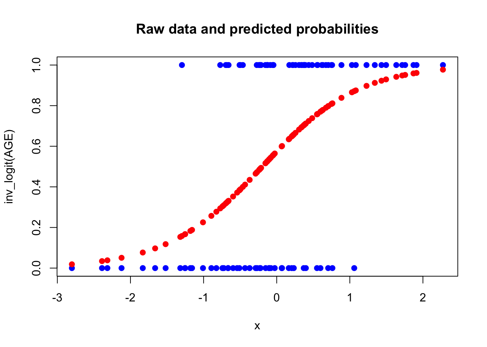
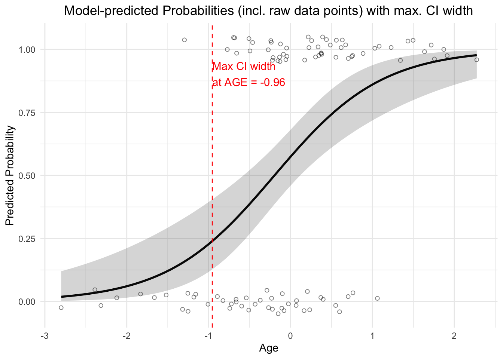
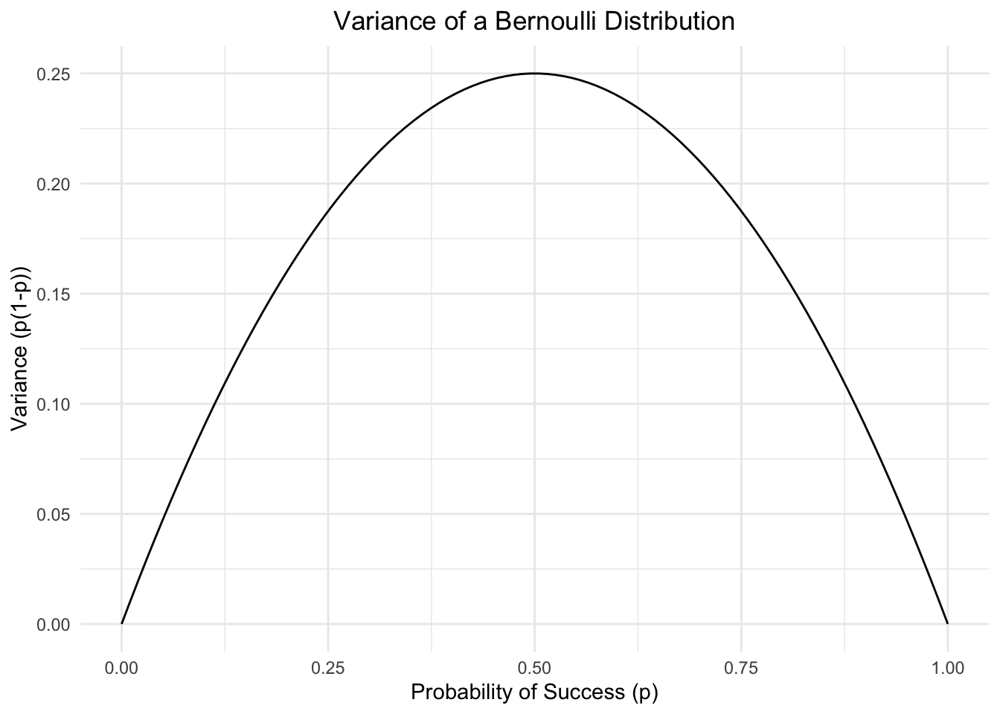
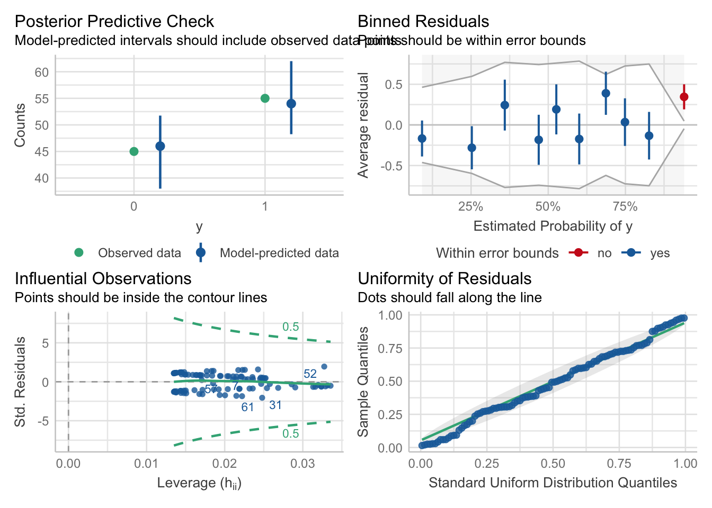
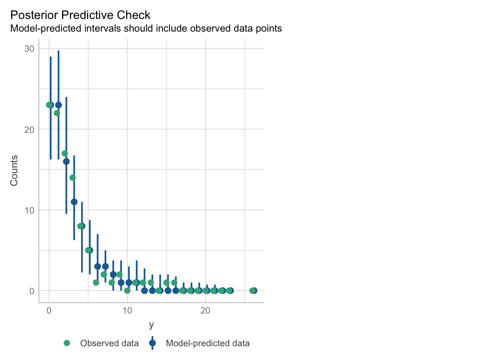

Chapter 3 Further Regression Methods
3.1 Linear Mixed Models (LMMs)
In Richard McElreath’s book “Statistical Rethinking”, chapters 13 and 14 deal with multilevel models. In Gelman’s Book, see ” Part 2A: Multilevel Models” and the following.
One very graspable introduction to LMMs is this video.
We have already come across a Linear Mixed Model (LMM)
in the first chapter, where we used the rethinking and lme4 packages to fit a model with
random intercepts to determine our
Intraclass Correlation Coefficients (ICCs).
The are called random intercept since they are drawn from a common normal distribution,
of which the parameters (mean and standard deviation) are estimated from the data.
The main reason for using LMMs is that they allow us to model data with hierarchical structure, such as repeated measures (of the same subject) or nested data (math scores in different schools within different school districts).
For example, in our Peter and Mary data set where they measured ROMs, we had two measurements per subject. The two measurements are clustered within the subject. They are not independent. Hence, the classical linear regression model is not appropriate and would lead to smaller standard errors.
Another example is our RESOLVE trial. We are conducting a cluster randomized trial (CRT) with \(20\) clusters (physiotherapy offices) and over \(200\) patients. Measurements within a cluster could be correlated (more similar compared to other clusters). One could also think of the physiotherapists performing the treatments as clusters, since - potentially - the outcomes for all their patients could be correlated due to a more similiar treatment from the same therapists compared to others. Here the outcome measures are nested within the physiotherapists which are nested within the physiotherapy offices (assuming they only work for one office).
3.1.1 Example: Reed Frog tadpole mortality - two levels
Let’s start with Example 13.1 from McElreath’s book (p.401) (Tadpoles in tanks, image by GPT4o).

## 'data.frame': 48 obs. of 5 variables:
## $ density : int 10 10 10 10 10 10 10 10 10 10 ...
## $ pred : Factor w/ 2 levels "no","pred": 1 1 1 1 1 1 1 1 2 2 ...
## $ size : Factor w/ 2 levels "big","small": 1 1 1 1 2 2 2 2 1 1 ...
## $ surv : int 9 10 7 10 9 9 10 9 4 9 ...
## $ propsurv: num 0.9 1 0.7 1 0.9 0.9 1 0.9 0.4 0.9 ...Variables are explained here (see also p.401 in the book). The original paper can be found here.
The number of surviving tadpoles surv should be modeled. Now, each row is a different “tank” (\(48\) in total), an experimental environment that contains tadpoles. Obviously, the tanks are one option for clustering the data, assuming the tadpoles within the same tank live in a more similar environment than those in different tanks (or get a more similiar “treatment”). We could rewrite the data set to have one row per individual tadpole (instead of number of survived a binary variable) and the cluster variable called tank (exercise 1). We would then model the survival of each individual tadpole (\(1\) could mean survived and \(0\) could mean died). Formally, this would be a so-called logistic regression, since our outcome is binary (survided/died).
When estimating the number of surviving tadpoles we could consider the following options:
- Complete pooling (exercise 6): Estimate the overall survival probability (ignoring the tank effect). In this case, one might miss between-variance from the different tanks. A single intercept is used for all tanks.
- No pooling: Estimate the survival probability for each tank (ignoring the overall effect completely). Here, the tanks do not “know” anything from one another. Information of one tank is not used for the other tanks. An intercept is estimated for each tank (\(48\) in total). This approach would be equivalent to using indicator variables for each tank.
- Partial pooling: Estimate the survival probability for each tank, but use information from the other tanks.
3.1.1.1 Model 13.1. Partial pooling using regularizing priors
Let’s start with the second model (intercept for each tank) with a regularizing prior. We want to model the number of surviving tadpoles in the tanks by using a binomial distribution with different survival probabilities for each tank.
Here is our model in the typical notation:
\[ \begin{array}{rcl} S_i &\sim& Binomial(N_i, p_i) \\ logit(p) &=& \alpha_{TANK}[i] \\ \alpha_j &\sim& \text{Normal}(0, 1.5)~\text{for } j=1,\ldots,48 \end{array} \]
This is a varying intercept model (the simplest kind of varying effects model) with \(48\) intercepts (one for each tank).
The number of surviving tadpoles \(S_i\) in tank \(i\) is modeled as a binomial distribution with \(N_i\) trials (the number of tadpoles in the tank) and \(p_i\) the survival probability of tank \(i\). The regularizing prior for \(\alpha_j\) is a normal distribution with mean \(0\) and standard deviation \(1.5\).
Technically, we could use different priors for each intercept, but this would be a bit cumbersome and we do not have useful prior information about the survival probabilities of the tanks.
Notice that we use a logit link function to transform the probability \(p\) (range \((0,1)\))
to the range \((-\infty, \infty)\).
This way, we can use a normal distribution for the prior of the intercepts.
The inverse of the logit function is also available in rethinking: inv_logit.
rethinking::inv_logit(0)gives the probability of \(0.5\). So, we assume a coin flip for
the survival probability of the tadpoles in the tanks a priori
(maybe not the worst starting point if you have no clue).
What survaival probabilities do we assume a priori? Well, according to the normal distribution with a standard deviation of \(1.5\) we assume that the 95% of the logit-transformed survival probabilities are between \(-3\) and \(3\). This means that the survival probabilities in the tanks are in:
## [1] 0.04742587 0.95257413This assumption seems rather reasonable and survival probabilities are not constrained very much.
Next we define the data set for the model and use the ulam function
from the rethinking package to fit the model.
library(rethinking)
d$tank <- 1:nrow(d)
dat <- list(S = d$surv,
N = d$density,
tank = d$tank)
# approximate posterior
set.seed(122)
m13.1 <- ulam(
alist(
S ~ dbinom(N, p),
logit(p) <- a[tank],
a[tank] ~ dnorm(0, 1.5)
) , data = dat,
chains = 4,
log_lik = TRUE,
cores = detectCores() - 1)## Running MCMC with 4 chains, at most 7 in parallel, with 1 thread(s) per chain...
##
## Chain 1 Iteration: 1 / 1000 [ 0%] (Warmup)
## Chain 1 Iteration: 100 / 1000 [ 10%] (Warmup)
## Chain 1 Iteration: 200 / 1000 [ 20%] (Warmup)
## Chain 1 Iteration: 300 / 1000 [ 30%] (Warmup)
## Chain 1 Iteration: 400 / 1000 [ 40%] (Warmup)
## Chain 1 Iteration: 500 / 1000 [ 50%] (Warmup)
## Chain 1 Iteration: 501 / 1000 [ 50%] (Sampling)
## Chain 1 Iteration: 600 / 1000 [ 60%] (Sampling)
## Chain 1 Iteration: 700 / 1000 [ 70%] (Sampling)
## Chain 1 Iteration: 800 / 1000 [ 80%] (Sampling)
## Chain 1 Iteration: 900 / 1000 [ 90%] (Sampling)
## Chain 1 Iteration: 1000 / 1000 [100%] (Sampling)
## Chain 2 Iteration: 1 / 1000 [ 0%] (Warmup)
## Chain 2 Iteration: 100 / 1000 [ 10%] (Warmup)
## Chain 2 Iteration: 200 / 1000 [ 20%] (Warmup)
## Chain 2 Iteration: 300 / 1000 [ 30%] (Warmup)
## Chain 2 Iteration: 400 / 1000 [ 40%] (Warmup)
## Chain 2 Iteration: 500 / 1000 [ 50%] (Warmup)
## Chain 2 Iteration: 501 / 1000 [ 50%] (Sampling)
## Chain 2 Iteration: 600 / 1000 [ 60%] (Sampling)
## Chain 2 Iteration: 700 / 1000 [ 70%] (Sampling)
## Chain 2 Iteration: 800 / 1000 [ 80%] (Sampling)
## Chain 2 Iteration: 900 / 1000 [ 90%] (Sampling)
## Chain 2 Iteration: 1000 / 1000 [100%] (Sampling)
## Chain 3 Iteration: 1 / 1000 [ 0%] (Warmup)
## Chain 3 Iteration: 100 / 1000 [ 10%] (Warmup)
## Chain 3 Iteration: 200 / 1000 [ 20%] (Warmup)
## Chain 3 Iteration: 300 / 1000 [ 30%] (Warmup)
## Chain 3 Iteration: 400 / 1000 [ 40%] (Warmup)
## Chain 3 Iteration: 500 / 1000 [ 50%] (Warmup)
## Chain 3 Iteration: 501 / 1000 [ 50%] (Sampling)
## Chain 3 Iteration: 600 / 1000 [ 60%] (Sampling)
## Chain 3 Iteration: 700 / 1000 [ 70%] (Sampling)
## Chain 3 Iteration: 800 / 1000 [ 80%] (Sampling)
## Chain 3 Iteration: 900 / 1000 [ 90%] (Sampling)
## Chain 3 Iteration: 1000 / 1000 [100%] (Sampling)
## Chain 4 Iteration: 1 / 1000 [ 0%] (Warmup)
## Chain 4 Iteration: 100 / 1000 [ 10%] (Warmup)
## Chain 4 Iteration: 200 / 1000 [ 20%] (Warmup)
## Chain 4 Iteration: 300 / 1000 [ 30%] (Warmup)
## Chain 4 Iteration: 400 / 1000 [ 40%] (Warmup)
## Chain 4 Iteration: 500 / 1000 [ 50%] (Warmup)
## Chain 4 Iteration: 501 / 1000 [ 50%] (Sampling)
## Chain 4 Iteration: 600 / 1000 [ 60%] (Sampling)
## Chain 4 Iteration: 700 / 1000 [ 70%] (Sampling)
## Chain 4 Iteration: 800 / 1000 [ 80%] (Sampling)
## Chain 4 Iteration: 900 / 1000 [ 90%] (Sampling)
## Chain 4 Iteration: 1000 / 1000 [100%] (Sampling)
## Chain 1 finished in 0.1 seconds.
## Chain 2 finished in 0.1 seconds.
## Chain 3 finished in 0.1 seconds.
## Chain 4 finished in 0.1 seconds.
##
## All 4 chains finished successfully.
## Mean chain execution time: 0.1 seconds.
## Total execution time: 0.2 seconds.## mean sd 5.5% 94.5% rhat ess_bulk
## a[1] 1.717154006 0.7747045 0.54616751 3.00284170 1.0000687 3842.501
## a[2] 2.428617822 0.9211741 1.06824055 4.00015385 1.0012690 3260.212
## a[3] 0.752957586 0.6606081 -0.30096467 1.87725390 0.9994289 3657.926
## a[4] 2.392671596 0.9029471 1.04232310 3.96444320 0.9999341 4901.360
## a[5] 1.698600986 0.7501296 0.56599784 2.95760400 1.0010747 3583.085
## a[6] 1.709016626 0.7333373 0.61628599 2.93631575 1.0043948 3791.625
## a[7] 2.394662704 0.8967971 1.05357265 3.91037710 1.0021691 4633.411
## a[8] 1.751520527 0.8358778 0.51949731 3.11502600 1.0010314 2908.886
## a[9] -0.368916633 0.6263820 -1.40362045 0.63108741 1.0014184 5011.742
## a[10] 1.721989971 0.7876527 0.53971156 3.01818445 1.0064067 4743.990
## a[11] 0.762625202 0.6504815 -0.23379561 1.84594325 1.0042895 4356.338
## a[12] 0.360839662 0.6212530 -0.61653294 1.35696620 1.0003393 5427.338
## a[13] 0.747187659 0.6556836 -0.26629876 1.86578240 1.0047650 4965.966
## a[14] 0.004006226 0.6030814 -0.96596033 0.95626616 1.0015451 3860.382
## a[15] 1.698071502 0.7557423 0.58532612 3.00604665 1.0044770 4060.982
## a[16] 1.718281276 0.7589570 0.55788234 3.01417210 0.9995458 4085.653
## a[17] 2.540229640 0.6715384 1.51315760 3.67929090 1.0045229 3551.210
## a[18] 2.143608256 0.6099572 1.24664285 3.19176460 1.0027772 4601.028
## a[19] 1.814013282 0.5661173 0.96992496 2.74369310 1.0008102 3875.396
## a[20] 3.123650833 0.8415721 1.90725255 4.55287270 1.0001108 4325.296
## a[21] 2.144628056 0.6206063 1.21321885 3.18875240 1.0003712 4533.942
## a[22] 2.147574902 0.5862451 1.27518855 3.13301315 1.0054417 3115.241
## a[23] 2.158113205 0.6232680 1.23542735 3.20262840 1.0031826 4470.846
## a[24] 1.559385117 0.5054760 0.81471935 2.39450025 1.0050444 4677.140
## a[25] -1.100464102 0.4645629 -1.90970175 -0.37079074 1.0031187 4404.834
## a[26] 0.066658204 0.3997793 -0.57122361 0.71319580 1.0064293 5082.203
## a[27] -1.543870059 0.4969425 -2.35267600 -0.80927273 1.0049318 4888.677
## a[28] -0.545686639 0.3798291 -1.16412750 0.05957414 1.0141192 4539.855
## a[29] 0.076432999 0.3891808 -0.54687735 0.68588656 1.0063621 4372.045
## a[30] 1.317149701 0.4699257 0.61627877 2.10864310 1.0045814 4237.156
## a[31] -0.730232329 0.4142389 -1.41215210 -0.08699833 1.0056791 4674.458
## a[32] -0.380477602 0.3973004 -1.02838145 0.22966973 1.0027171 4757.953
## a[33] 2.854476850 0.6688006 1.86231770 3.93923980 1.0028748 4265.441
## a[34] 2.465178502 0.6016136 1.57307340 3.49223990 1.0034665 4026.537
## a[35] 2.475988085 0.6001981 1.62509180 3.45605210 1.0022452 3520.649
## a[36] 1.906146592 0.4793998 1.17540695 2.69468780 1.0091406 3637.720
## a[37] 1.903268812 0.4848702 1.17045730 2.68925485 0.9999314 4580.692
## a[38] 3.377291100 0.7728682 2.21480150 4.70722490 0.9999677 3559.742
## a[39] 2.448119286 0.5794139 1.58287005 3.42906255 1.0005167 4544.304
## a[40] 2.154826607 0.5110004 1.38358250 3.05123950 1.0057481 3928.734
## a[41] -1.924960111 0.4805039 -2.72391445 -1.20680920 1.0003669 3217.189
## a[42] -0.639489130 0.3594361 -1.20374385 -0.07755664 1.0036102 3891.702
## a[43] -0.515434665 0.3438150 -1.06684055 0.01709138 1.0067069 3206.309
## a[44] -0.399514162 0.3554107 -0.97334898 0.16487656 1.0043647 5212.318
## a[45] 0.519393681 0.3592609 -0.05772033 1.08264245 1.0022088 4807.785
## a[46] -0.636130179 0.3468987 -1.20742535 -0.10853365 1.0071298 3963.335
## a[47] 1.919195782 0.4916630 1.16999095 2.74101715 1.0000987 3428.411
## a[48] -0.061061407 0.3286406 -0.57313044 0.45005764 1.0009603 3435.612## [1] 0.8477619The R-output from precis(m13.1, depth = 2)shows the posterior means and standard deviations of
our \(48\) interecepts (\(48\) tanks with tadpoles). These intercepts are on the scale \((-\infty, \infty)\).
Note that you can always switch from the range \((-\infty, \infty)\) to a probability using the logistic function
from the rethinking package - these functions are called squashing functions for a reason.
The inv_logitfunction does the same.
\[ \mathrm{logistic}(x) = \mathrm{inv\_logit}(x) = \frac{1}{1 + e^{-x}} \]
The other way around works as well, using the logit function.
\[\text{logit}(p) = \log\left( \frac{p}{1 - p} \right)\]
Let’s quickly see if these are indeed inverse functions of each other -> exercise 5.
3.1.1.2 Model 13.2: Partial pooling using adaptive pooling
Next, we use adaptive pooling. For this, we use priors for the a[tank] parameters.
This model learns from the data how much the intercepts should be pulled towards a common mean.
Now we have an additional level in the model hierarchy:
- In the top level, the outcome is \(S\), the parameters are the intercepts \(\alpha_{TANK[i]}\), and the priors are \(\alpha_j \sim N(\bar{\alpha}, \sigma)\).
- In the second level, the “outcome” are the intercepts \(\alpha_{TANK[i]}\), the parameters are \(\bar{\alpha}\) and \(\sigma\), and the priors are \(\bar{\alpha} \sim N(0, 1.5)\) and \(\sigma \sim \text{Exponential}(1)\).
\[ \begin{array}{rcl} S_i &\sim& \text{Binomial}(N_i, p_i) \\ \text{logit}(p) &=& \alpha_{\text{TANK}[i]} \\ \alpha_j &\sim& \text{Normal}(\bar{\alpha}, \sigma)\\ \bar{\alpha} &\sim& \text{Normal}(0, 1.5)\\ \sigma &\sim& \text{Exponential}(1) \end{array} \]
Since the parameters in the prior of the \(\alpha_j\) have also priors (last two lines are new), we have a multilevel model. In this case, we have two levels and the parameters \(\bar{\alpha}\) and \(\sigma\) are called hyperparameters. The priors of the hyperparameters are called hyperpriors. The amount or regularization is controlled by the hyperparameter \(\sigma\) and is learned from the data. \(\sigma\) controls, how much the intercepts are allowed to deviate from the mean \(\bar{\alpha}\). The smaller \(\sigma\), the more the intercepts are pulled towards the mean \(\bar{\alpha}\).
Below, we see the model hierarchy:

We now fit the model using the ulam function from the rethinking package.
## [conflicted] Will prefer posterior::var over any other package.## [conflicted] Removing existing preference.
## [conflicted] Will prefer posterior::sd over any other package.m13.2 <- ulam(
alist(
S ~ dbinom(N, p),
logit(p) <- a[tank],
a[tank] ~ dnorm(a_bar, sigma),
a_bar ~ dnorm(0, 1.5),
sigma ~ dexp(1)
) , data = dat,
chains = 4,
log_lik = TRUE,
cores = detectCores() - 1)## Running MCMC with 4 chains, at most 7 in parallel, with 1 thread(s) per chain...
##
## Chain 1 Iteration: 1 / 1000 [ 0%] (Warmup)
## Chain 1 Iteration: 100 / 1000 [ 10%] (Warmup)
## Chain 1 Iteration: 200 / 1000 [ 20%] (Warmup)
## Chain 1 Iteration: 300 / 1000 [ 30%] (Warmup)
## Chain 1 Iteration: 400 / 1000 [ 40%] (Warmup)
## Chain 1 Iteration: 500 / 1000 [ 50%] (Warmup)
## Chain 1 Iteration: 501 / 1000 [ 50%] (Sampling)
## Chain 1 Iteration: 600 / 1000 [ 60%] (Sampling)
## Chain 1 Iteration: 700 / 1000 [ 70%] (Sampling)
## Chain 1 Iteration: 800 / 1000 [ 80%] (Sampling)
## Chain 1 Iteration: 900 / 1000 [ 90%] (Sampling)
## Chain 1 Iteration: 1000 / 1000 [100%] (Sampling)
## Chain 2 Iteration: 1 / 1000 [ 0%] (Warmup)
## Chain 2 Iteration: 100 / 1000 [ 10%] (Warmup)
## Chain 2 Iteration: 200 / 1000 [ 20%] (Warmup)
## Chain 2 Iteration: 300 / 1000 [ 30%] (Warmup)
## Chain 2 Iteration: 400 / 1000 [ 40%] (Warmup)
## Chain 2 Iteration: 500 / 1000 [ 50%] (Warmup)
## Chain 2 Iteration: 501 / 1000 [ 50%] (Sampling)
## Chain 2 Iteration: 600 / 1000 [ 60%] (Sampling)
## Chain 2 Iteration: 700 / 1000 [ 70%] (Sampling)
## Chain 2 Iteration: 800 / 1000 [ 80%] (Sampling)
## Chain 2 Iteration: 900 / 1000 [ 90%] (Sampling)
## Chain 2 Iteration: 1000 / 1000 [100%] (Sampling)
## Chain 3 Iteration: 1 / 1000 [ 0%] (Warmup)
## Chain 3 Iteration: 100 / 1000 [ 10%] (Warmup)
## Chain 3 Iteration: 200 / 1000 [ 20%] (Warmup)
## Chain 3 Iteration: 300 / 1000 [ 30%] (Warmup)
## Chain 3 Iteration: 400 / 1000 [ 40%] (Warmup)
## Chain 3 Iteration: 500 / 1000 [ 50%] (Warmup)
## Chain 3 Iteration: 501 / 1000 [ 50%] (Sampling)
## Chain 3 Iteration: 600 / 1000 [ 60%] (Sampling)
## Chain 3 Iteration: 700 / 1000 [ 70%] (Sampling)
## Chain 3 Iteration: 800 / 1000 [ 80%] (Sampling)
## Chain 3 Iteration: 900 / 1000 [ 90%] (Sampling)
## Chain 3 Iteration: 1000 / 1000 [100%] (Sampling)
## Chain 4 Iteration: 1 / 1000 [ 0%] (Warmup)
## Chain 4 Iteration: 100 / 1000 [ 10%] (Warmup)
## Chain 4 Iteration: 200 / 1000 [ 20%] (Warmup)
## Chain 4 Iteration: 300 / 1000 [ 30%] (Warmup)
## Chain 4 Iteration: 400 / 1000 [ 40%] (Warmup)
## Chain 4 Iteration: 500 / 1000 [ 50%] (Warmup)
## Chain 4 Iteration: 501 / 1000 [ 50%] (Sampling)
## Chain 4 Iteration: 600 / 1000 [ 60%] (Sampling)
## Chain 4 Iteration: 700 / 1000 [ 70%] (Sampling)
## Chain 4 Iteration: 800 / 1000 [ 80%] (Sampling)
## Chain 4 Iteration: 900 / 1000 [ 90%] (Sampling)
## Chain 4 Iteration: 1000 / 1000 [100%] (Sampling)## Chain 4 Informational Message: The current Metropolis proposal is about to be rejected because of the following issue:
## Chain 4 Exception: normal_lpdf: Scale parameter is 0, but must be positive! (in '/var/folders/pm/jd6n6gj10371_bml1gh8sc5w0000gn/T/RtmpeDFS8S/model-d0b946ace457.stan', line 15, column 4 to column 32)
## Chain 4 If this warning occurs sporadically, such as for highly constrained variable types like covariance matrices, then the sampler is fine,
## Chain 4 but if this warning occurs often then your model may be either severely ill-conditioned or misspecified.
## Chain 4## Chain 1 finished in 0.1 seconds.
## Chain 2 finished in 0.1 seconds.
## Chain 3 finished in 0.1 seconds.
## Chain 4 finished in 0.1 seconds.
##
## All 4 chains finished successfully.
## Mean chain execution time: 0.1 seconds.
## Total execution time: 0.2 seconds.## mean sd 5.5% 94.5% rhat ess_bulk
## a[1] 2.1360104954 0.8661191 0.83424198 3.553682700 1.0026805 3270.394
## a[2] 3.0781335085 1.1236851 1.43096300 4.984337950 1.0021514 3333.772
## a[3] 1.0172166998 0.6728834 0.02487391 2.122557100 1.0017997 4433.035
## a[4] 3.0539084560 1.0673010 1.45577985 4.862345550 0.9991935 3292.307
## a[5] 2.1460704153 0.8885053 0.82128835 3.632871100 1.0012996 3243.212
## a[6] 2.1295681940 0.8491091 0.88580128 3.547453050 1.0068927 4014.260
## a[7] 3.0995747675 1.1423048 1.49656170 5.081114500 1.0000324 2876.988
## a[8] 2.1399446424 0.9003458 0.81845163 3.682066500 1.0014370 3989.652
## a[9] -0.1714730123 0.6191399 -1.18887420 0.817493905 1.0011313 3485.167
## a[10] 2.0975422705 0.8315647 0.86475233 3.491159800 1.0003507 3475.655
## a[11] 0.9972846111 0.6886670 -0.06780398 2.108900800 1.0035689 6346.111
## a[12] 0.5808274429 0.6321307 -0.39005998 1.589965800 1.0073548 4009.231
## a[13] 1.0044482950 0.6869233 -0.06659326 2.145820400 1.0062364 5228.172
## a[14] 0.1943572393 0.5958137 -0.75088828 1.137035850 1.0090229 4741.338
## a[15] 2.1509188614 0.8679934 0.90383891 3.653387850 1.0031940 3312.879
## a[16] 2.1333640552 0.9017144 0.80812878 3.653567300 1.0126010 4233.256
## a[17] 2.9192000930 0.8415071 1.68621300 4.328422500 1.0040634 4410.077
## a[18] 2.3925664980 0.6551941 1.42167145 3.513079150 1.0056149 4144.799
## a[19] 2.0077513930 0.5900888 1.11100110 2.993477400 1.0059627 3633.662
## a[20] 3.6725677750 1.0278681 2.20375370 5.475839300 1.0049323 3236.751
## a[21] 2.4059350610 0.6759614 1.38493480 3.559096600 1.0015502 5132.563
## a[22] 2.4065305525 0.6796675 1.42094305 3.541692650 0.9991290 3831.139
## a[23] 2.3861532095 0.6514720 1.42360935 3.472103550 1.0043729 4128.680
## a[24] 1.7089185740 0.5393019 0.87925440 2.627249950 1.0048578 4608.699
## a[25] -1.0120972883 0.4472418 -1.73198540 -0.326257340 1.0014661 4734.657
## a[26] 0.1608543317 0.3886832 -0.46547174 0.767354565 1.0023246 4941.014
## a[27] -1.4196695957 0.4932724 -2.25709745 -0.685836175 1.0028562 4123.586
## a[28] -0.4766474294 0.4060361 -1.14774660 0.151370735 1.0052220 3931.755
## a[29] 0.1694769825 0.4170077 -0.49255198 0.859140040 1.0020527 4739.882
## a[30] 1.4511140548 0.5133738 0.66183801 2.306309700 1.0011993 4978.641
## a[31] -0.6385969972 0.4191422 -1.30238420 0.002327188 1.0021641 4600.143
## a[32] -0.3101703440 0.3728743 -0.90309567 0.287795040 0.9998292 5387.376
## a[33] 3.1774488200 0.7655335 2.08349505 4.549344000 1.0049724 3861.331
## a[34] 2.7053424900 0.6559522 1.73698945 3.801545200 1.0012059 4418.032
## a[35] 2.7221132200 0.6273888 1.81337830 3.780182650 1.0009124 3645.004
## a[36] 2.0546272795 0.4965714 1.31339900 2.878739800 1.0062188 4941.400
## a[37] 2.0584841305 0.5188968 1.26758275 2.917035500 1.0015659 4474.923
## a[38] 3.8972652500 0.9072140 2.63982515 5.508591850 1.0012459 3004.701
## a[39] 2.6974989445 0.6268090 1.74492005 3.751004950 0.9991983 3801.943
## a[40] 2.3462939655 0.5804959 1.47061030 3.318163350 1.0087612 3756.208
## a[41] -1.8135897265 0.4813845 -2.60774680 -1.085182300 1.0000863 3538.261
## a[42] -0.5797062286 0.3540843 -1.15873190 -0.026373790 1.0025961 3932.502
## a[43] -0.4553320681 0.3423639 -1.00197960 0.080289540 1.0064972 4788.740
## a[44] -0.3294683952 0.3311178 -0.86400261 0.191963110 1.0099484 4098.959
## a[45] 0.5781168532 0.3537311 0.02023151 1.152294850 1.0051871 4534.473
## a[46] -0.5734202532 0.3340746 -1.11167870 -0.052582168 1.0045535 3855.996
## a[47] 2.0729423255 0.5180042 1.30783735 2.935491000 1.0033394 3591.954
## a[48] -0.0003544386 0.3378852 -0.52970810 0.533022400 1.0060391 4423.905
## a_bar 1.3420237045 0.2527708 0.94567161 1.760416550 1.0011880 2994.562
## sigma 1.6149891850 0.2052025 1.30750950 1.961327050 0.9998544 1674.452Now, the output of precis(m13.2, depth = 2) additionally shows the posterior means
and standard deviations of the hyperparameters \(\bar{\alpha}\) (a_bar)
and \(\sigma\) (sigma).
3.1.1.3 Conceptual difference between model 13.1 and 13.2
Model 13.1 is not a multilevel model, we just tell the model there are \(48\) tanks and each tank has its own intercept. For each intercept, we use the same prior distribution (\(Normal (0, 1.5)\)), but we could use different ones if we had knowledge about the survival probabilities of some of the tanks. Note that the priors themselves are not connected via another level. They do their thing independently.
By decreasing the variance of these priors, we are dampening the influence of the data on the intercepts which are drawn towards to overall mean.
Increasing the variance of the priors to a value large enough will result in the raw survival probabilities for each tank. This would be the same as if we took indicator variables for each tank. See exercise 2.
Model 13.2 is a multilevel model. Now the model learns from the data from which overall mean and variance the intercepts are drawn (\(Normal(\bar{\alpha}, \sigma)\)). The prior for \(\bar{\alpha}\) expresses our belief about the mean survival probability, while the prior for \(\sigma\) expresses our belief about the variability of the survival probabilities.
Figure 13.1 from the book depicts the pooling effect of model 13.2. with respect to tadpole tank size.

In exercise 2 we make the difference between the models 13.1 and 2 clearer. Figure 13.1 from the book shows the posterior survival probabilities for each tank from model 13.2 (black circles) and raw survival probabilities (blue filled points). What we can see is that the estimated survival probabilities for the hierarchical model are drawn towards the mean overall survival probability across all tanks (dashed line; \(logistic(\bar{\alpha}) \approx 0.79\)).
- In large tanks, there is less shrinkage (enough information/observations), while in small tanks the estimates are pulled more towards the mean (information is used from other tanks).
- The more extreme the raw survival probability (with respect to the overall survival probability), the more it is pulled towards the mean.
This is the pooling effect of the model. The phenomenon is called shrinkage.
See also exercise 3 to improve your understanding of two models.
3.1.1.4 Compare models 13.1 and 13.2 with respect to predictive ability on unseen data
In QM2 we talked about the difference between explanatory vs. predictive models. If you are interested, you can read section 7.4 (p.217) in the book.
In a prediciton context we ask ourselves: How well do the models predict the data (which was measured using residuals \(y_i - \hat{y}_i\) in regression)?
There are many nuances but the main paradigm (also in classical machine learning) is to fit the model on a training set and evaluate the model on a test set. Should you be interested in the (admittedly very technical) details, I can recommend the book Elements of Statistical Learning by Hastie, Tibshirani and Friedman (free here).
During training, the model tries to learn the underlying structure of the data. The test set is used to evaluate the model’s performance on unseen data. This is the ultimate and brutally honest test of the model’s predictive ability.
For instance, if you think back to our body height prediction example in QM2, we would fit the model on 80% of people (training set) and see how precise the model is on the remaining 20% of people (test set). Let’s do this in exercise 7.
Remember, in prediction we do not care about interpretability of the model. We could have a blackbox model (e.g. neural networks) and still be happy with it. This performance can often be surprisingly good (like in the case of hand digit recognition reaching error rates as low as 0.09%), or surprisingly bad (when trying to predict some binary outcome using logistic regression in applied health research where the performance is often not far away from the base rate probability).
In order to estimate the predictive ability of a model, there are many criteria available. One of them is the WAIC:
## WAIC lppd penalty std_err
## 1 216.2614 -81.72813 26.40257 4.679153## WAIC lppd penalty std_err
## 1 200.3715 -79.18461 21.00113 7.205089## WAIC SE dWAIC dSE pWAIC weight
## m13.2 200.3715 7.205089 0.00000 NA 21.00113 0.9996456832
## m13.1 216.2614 4.679153 15.88993 3.798405 26.40257 0.0003543168WAIC stands for Widely Applicable Information Criterion and is a measure of prediction accuracy on new data (out of sample deviance); see p.219 and p.404 in Statistical Rethinking. As it is pointed out in the book “Using tools like PSIS and WAIC is much easier than understanding them.”
We do not go into the details of WAIC, but as a first dirty rule of thumb, the model with the lower WAIC is preferred. One should never solely rely on this criterion, especially not if one is interested in causal questions.
What are the columns?
WAIC: guess of the out-of-sample deviance.SE: standard error of the WAIC estimate.dWAIC: difference of each WAIC from the best model (with the smallest WAIC).dSE: standard error of this difference. Here, the standard error of the difference (\(3.79\)) is much smaller compared to the difference in WAIC between the models (\(15.88993\)). Here, one can distinguish between the models using WAIC. \(\rightarrow\) m13.2 is preferred (with respect to predictive ability on unseen data).pWAIC: prediction penalty. This is close to the number of parameters in the posterior.weight: the Akaike weight, a measure of relative support for each model. In our case, it is almost 1 for model 13.2 and almost 0 for model 13.1.
Feel free to read p.227 in the book, specifically before you use WAIC in a publication or thesis.
One can also plot this information for a better overview:

The filled points show how the model performs on the data it was trained on. Typically, this is lower compared to the out-of-sample deviance (open points) for both models. Section 13.2 (especially Figure 13.3.) in the book shows that partial pooling also yields (on average) better predictions compared to no pooling, it’s a tradeoff between over- and underfitting.
3.1.1.4.1 Frequentist version model 13.2
In the Frequentist setting we can use the lme4 package to fit the analog
to model 13.2. To be more specific,
we use a generalized linear mixed model (GLMM).
Generalized because we assume a binomial distribution for the response variable,
while usually we have a continuous outcome variable (like body height in cm).
Let’s fit the model and explain the outcome first. \(S\) is the number of surviving tadpoles, \(N\) is the number of tadpoles in the tank.
library(lme4)
m_lmer <- glmer(
cbind(S, N - S) ~ (1 | tank),
data = dat,
family = binomial(link = "logit"),
control = glmerControl(optimizer = "bobyqa")
)
summary(m_lmer)## Generalized linear mixed model fit by maximum likelihood (Laplace
## Approximation) [glmerMod]
## Family: binomial ( logit )
## Formula: cbind(S, N - S) ~ (1 | tank)
## Data: dat
## Control: glmerControl(optimizer = "bobyqa")
##
## AIC BIC logLik -2*log(L) df.resid
## 271.6 275.3 -133.8 267.6 46
##
## Scaled residuals:
## Min 1Q Median 3Q Max
## -0.5981 -0.2255 0.1267 0.2457 0.9677
##
## Random effects:
## Groups Name Variance Std.Dev.
## tank (Intercept) 2.459 1.568
## Number of obs: 48, groups: tank, 48
##
## Fixed effects:
## Estimate Std. Error z value Pr(>|z|)
## (Intercept) 1.3786 0.2505 5.503 3.74e-08 ***
## ---
## Signif. codes: 0 '***' 0.001 '**' 0.01 '*' 0.05 '.' 0.1 ' ' 1For convergence reasons (after trial and error), we used the bobyqa optimizer.
We do not care so much about the technical details behind the model fitting procedure.
Briefly, the model is not fitted using the least squares method anymore,
but the maximum likelihood method
(see also Westfall p.43-52),
which is another way of finding model parameters in parametric statistics.
Interestingly, the way to fit the model in front of us is outlined in the help file of the command
glmer (see ?glmer).
The syntax (1 | tank) means that we fit a random intercept for each tank.
For details on the random effect structure definition see
p.7 here.
You will always see such a term if you model clustered data in the Frequentist
setting (at least in R).
AIC (Akaike Information Criterion) and BIC (Bayesian Information Criterion) are two measures of model fit which both consider the model fit and the number of parameters simultaneously. Both punish the number of parameters in the model, but not equally strong.
In the summary output, we see the values for AIC, BIC and the log-likelihood.
The latter is used to fit the model. -2logLik is the so-called deviance of
the model and has - under \(H_0\) - a \(\chi^2\) distribution that can be exploited
for hypothesis testing. This term takes the place of the residual sum of squares
in least squares regression.
The Std.Dev. of the Random effect tank is \(1.568\) which schould be somewhat similar
to the sigma in the Bayesian model (\(1.614989185\)), which is the case here.
The major difference is that in the Frequentist model, this \(\sigma\) is only
learned from the data, while in the Bayesian model we have priors too.
The Fixed effect (Intercept) (\(1.3786\)) is the logit of the mean survival probability
across all tanks and analog to the a_bar (\(1.3420237045\)) in the Bayesian model.
df.residis \(46\), sample size is \(48\). Two degrees of freedom are lost due
to the estimation of the overall (Intercept) and the random effect (the standard
deviation \(\sigma\) of tank).
And of course, at the bottom of the summary output, for the stargazers among us, are the Signif. codes.
In summary, both (Frequentist and Bayesian) models deliver rather similar results.
We leave it as an exercise (4) to compare the model-estimated survival probabilities in the tanks for both models.
Section 13.2. in the book shows that partial pooling also yields (on average) better predictions compared to no pooling, it’s a tradeoff between over- and underfitting (i.e. the raw probabilities in each tank without knowledge of the other tanks and one overall survival probability that ignores differences between tanks completely).
3.1.2 Example: Mulligan manual therapy - paper
We want to replicate the main result of “Mulligan manual therapy added to exercise improves headache frequency, intensity and disability more than exercise alone in people with cervicogenic headache: a randomised trial”.
This randomized clinical trial evaluated the effectiveness of adding Mulligan manual therapy to exercise in patients with cervicogenic headache. The study found that combining Mulligan therapy with exercise led to greater improvements in headache frequency, intensity, and disability compared to exercise alone or a control group.
Some comments:
They used SPSS for data analysis. Unfortunately, no code was provided or another convenient way replicate the results.
Data was provided as Excel file in the appendix.
At first glance, I could not find a method for sample size calculation in the referenced literature. Let’s research this more as an exercise.
The primary outcome is headache frequency (headache days per month). Ad hoc, such a count variable is not very likely to be normally distributed. In the methods section they state “For outcomes with normally distributed data, means and standard deviations were calculated”. Table 2 in the paper implies that the primary outcome should be normally distributed. Verify this as exercise using the
shapiro.testfunction in R. We (only) do this, since they as well used a version of this test. The primary outcome variable has only \(6\) unique values (\(4-9\)) at week \(0\) and can therefore not be normally distributed (normal distribution takes infinitely many values).I am not sure what the authors mean exactly with the term “general linear model”. Here (p.102) a general linear model is just a multiple linear regression model. My guess is that they did a two-way repeated measures ANOVA.
There seems to be no checking of the model assumptions in the paper.
There seems to be no description of handling missing data.
3.1.2.1 Frequentist attempt to replicate the results.
We could try to use this as guideline if we wanted to replicate the two-way repeated measures ANOVA.
Maybe we try to use the lme4 package first to fit a linear mixed model (LMM).
The model equation should be:
\[ \begin{array}{rcl} \text{headache frequency}_{ij} &\sim& \text{Normal}(\mu_{ij}, \sigma) \\ \mu_{ij} &=& \alpha + \beta_1 \text{group}_i + \beta_2 \text{time}_j + \beta_3 (\text{group}_i \times \text{time}_j) + u_i + \varepsilon_{ij} \end{array} \]
- We model the headache frequency of patient \(i\) at time point \(j\) as normally distributed. It remains to bee seen if a normally distributed headache frequency is a good assumption. We will check this later. A priori, I would be doubtful.
- \(\alpha\) is the overall intercept (mean headache frequency at week \(0\) for the reference group)
- \(i = 1, \ldots, 99\) are the \(99\) participants (respectively 91 with complete observations)
- \(j\) is the time point (week \(0\), \(4\), \(13\), \(26\))
- \(u_i\) is the random effect for participant \(i\) (intercept), which comes from a normal distribution of course
- \(\varepsilon_{ij}\) is the residual error term, which is also normally distributed. This is a measure of how much the model does not explain.
- The interaction term allows for different intercepts for all combinations of group and time.
Note that both
groupandtimeare factors in the model. There are \(12\) combinations of group and time (3 groups times 4 time points). Be careful with the interpretation of the interaction term. As soon as an interaction term is present, we cannot directly interpret the main effects anymore.
Let’s first bring our data in shape (long format for lmer) and
(for simplicity) kill all rows with missing values (\(8\) observations).
Ideally, we would need to argue how we handle missing data!
library(readxl)
url <- "https://raw.githubusercontent.com/jdegenfellner/Script_QM3_ZHAW/main/data/Chapter_Further_Regression/Paper_Mulligan%20manual%20therapy%20added%20to%20exercise/1-s2.0-S1836955324000572-mmc1.xls"
temp_file <- tempfile(fileext = ".xls")
download.file(url, destfile = temp_file, mode = "wb")
df <- suppressMessages(
suppressWarnings(
readxl::read_xls(temp_file, sheet = 2)
)
)
df <- df[3:dim(df)[1], 1:6]
head(df)## # A tibble: 6 × 6
## `Subject no.` Group `Headache frequency` ...4 ...5 ...6
## <dbl> <chr> <chr> <chr> <chr> <chr>
## 1 1 Ex 5 4 5 4
## 2 2 Ex 7 6 6 5
## 3 3 Ex 6 4 7 6
## 4 4 Ex 7 5 6 5
## 5 5 Ex 7 7 5 <NA>
## 6 6 Ex 4 4 4 4## [1] 99 6## # A tibble: 99 × 6
## ID Group Week_0 Week_4 Week_13 Week_26
## <dbl> <chr> <chr> <chr> <chr> <chr>
## 1 1 Ex 5 4 5 4
## 2 2 Ex 7 6 6 5
## 3 3 Ex 6 4 7 6
## 4 4 Ex 7 5 6 5
## 5 5 Ex 7 7 5 <NA>
## 6 6 Ex 4 4 4 4
## 7 7 Ex 6 5 5 6
## 8 8 Ex 7 4 4 4
## 9 9 Ex 6 7 7 5
## 10 10 Ex 6 7 6 5
## # ℹ 89 more rows# Omit missing values since they will be thrown out anyways when using lmer!
df <- na.omit(df) # 8 rows (patients) are out!
df_long <- df %>%
pivot_longer(
cols = starts_with("Week_"),
names_to = "time",
values_to = "headache_frequency"
) %>%
mutate(
headache_frequency = as.numeric(headache_frequency),
time = recode(time,
"Week_0" = 0,
"Week_4" = 4,
"Week_13" = 13,
"Week_26" = 26)
)
df_long$ID <- as.factor(df_long$ID)
df_long$time_f <- factor(df_long$time, levels = c(0, 4, 13, 26))
df_long## # A tibble: 364 × 5
## ID Group time headache_frequency time_f
## <fct> <chr> <dbl> <dbl> <fct>
## 1 1 Ex 0 5 0
## 2 1 Ex 4 4 4
## 3 1 Ex 13 5 13
## 4 1 Ex 26 4 26
## 5 2 Ex 0 7 0
## 6 2 Ex 4 6 4
## 7 2 Ex 13 6 13
## 8 2 Ex 26 5 26
## 9 3 Ex 0 6 0
## 10 3 Ex 4 4 4
## # ℹ 354 more rowsThis seems to be okay. Note that we have 364 lines because of the long format: \(91\) participants (with complete observations) times \(4\) time points (\(0, 4,13,26\) weeks).
Next, we look at the raw data with a spaghetti plot. It is alway a good idea to know your raw data. Below, we have plotted the headache frequency colored by group. Time (week) is an integer variable and therefore the distances between the time points are not equal.
ggplot(df_long, aes(x = time, y = headache_frequency, group = ID, color = Group)) +
geom_line(alpha = 0.6, linewidth = 1) +
geom_point(size = 2) +
scale_x_continuous(breaks = c(0, 4, 13, 26)) +
labs(
title = "Spaghetti Plot: Headache Frequency Over Time",
x = "Week",
y = "Headache Frequency",
color = "Group"
) +
theme_minimal() +
theme(
plot.title = element_text(size = 14, face = "bold"),
legend.position = "top"
) +
theme(plot.title = element_text(hjust = 0.5))
It seems that the 3 different groups have different slopes which is indicative of an interaction effect between group and time. This means, treatments may differ in their effectiveness. MMT + ex seems to be clearly better compared to the other two groups (Ex and Sham + ex). Since participants were randomly assigned to the groups, this is indicative of a treatment effect.
With respect to our clustering, in our long data set, we have repeated measures for each participant (ID) at different time points. There are no repeated treatments though, since each participant is only in one group (of the three) and they do not crossover to one of the other treatments during the trial. Why do we not need a random intercept for the group? We are not drawing the groups from a larger population, the groups are fixed and the only ones of interest. The participants on the other hand are drawn from a larger population. Hence, we only consider the random intercept for each participant.
Let’s fit the model using the lme4 package:
## Welcome to emmeans.
## Caution: You lose important information if you filter this package's results.
## See '? untidy'model <- lmer(headache_frequency ~ Group * time_f + (1 | ID),
data = df_long)
summary(model) # ref for time: week 0## Linear mixed model fit by REML ['lmerMod']
## Formula: headache_frequency ~ Group * time_f + (1 | ID)
## Data: df_long
##
## REML criterion at convergence: 993.7
##
## Scaled residuals:
## Min 1Q Median 3Q Max
## -2.0566 -0.5788 -0.0496 0.5513 3.7147
##
## Random effects:
## Groups Name Variance Std.Dev.
## ID (Intercept) 0.3449 0.5872
## Residual 0.6619 0.8136
## Number of obs: 364, groups: ID, 91
##
## Fixed effects:
## Estimate Std. Error t value
## (Intercept) 5.63333 0.18319 30.751
## GroupMMT+ex -0.06667 0.25907 -0.257
## GroupSham+ex -0.05269 0.25697 -0.205
## time_f4 -0.63133 0.21007 -3.005
## time_f13 -0.63333 0.21007 -3.015
## time_f26 -1.26667 0.21007 -6.030
## GroupMMT+ex:time_f4 -2.30200 0.29708 -7.749
## GroupSham+ex:time_f4 0.37327 0.29467 1.267
## GroupMMT+ex:time_f13 -3.33333 0.29708 -11.220
## GroupSham+ex:time_f13 -0.01183 0.29467 -0.040
## GroupMMT+ex:time_f26 -3.53333 0.29708 -11.894
## GroupSham+ex:time_f26 0.07312 0.29467 0.248
##
## Correlation of Fixed Effects:
## (Intr) GrMMT+ GrpSh+ tim_f4 tm_f13 tm_f26 GMMT+:_4 GS+:_4 GMMT+:_1
## GroupMMT+ex -0.707
## GroupSham+x -0.713 0.504
## time_f4 -0.573 0.405 0.409
## time_f13 -0.573 0.405 0.409 0.500
## time_f26 -0.573 0.405 0.409 0.500 0.500
## GrpMMT+x:_4 0.405 -0.573 -0.289 -0.707 -0.354 -0.354
## GrpShm+x:_4 0.409 -0.289 -0.573 -0.713 -0.356 -0.356 0.504
## GrpMMT+:_13 0.405 -0.573 -0.289 -0.354 -0.707 -0.354 0.500 0.252
## GrpShm+:_13 0.409 -0.289 -0.573 -0.356 -0.713 -0.356 0.252 0.500 0.504
## GrpMMT+:_26 0.405 -0.573 -0.289 -0.354 -0.354 -0.707 0.500 0.252 0.500
## GrpShm+:_26 0.409 -0.289 -0.573 -0.356 -0.356 -0.713 0.252 0.500 0.252
## GS+:_1 GMMT+:_2
## GroupMMT+ex
## GroupSham+x
## time_f4
## time_f13
## time_f26
## GrpMMT+x:_4
## GrpShm+x:_4
## GrpMMT+:_13
## GrpShm+:_13
## GrpMMT+:_26 0.252
## GrpShm+:_26 0.500 0.504We are estimating headache frequency while considering repeated measures within patients.
In the random effects part of the output, we see again the standard deviation of the random intercept for each patient (\(0.5872\)), which is a measure of the variability of headache frequency between patients. Residual variance (\(0.6619\)) is high compared to this.
The so-called Fixed effects give the overall intercept in all
our factor combinations: (Intercept) is the overall mean headache frequency at week \(0\) (reference week)
and Group Ex (reference group).
Important for us are the so-called contrasts (below). These give us the model-estimated differences in (expected) headache frequency between the groups at each time point.
# constrasts:
emm <- emmeans(model, ~ Group | time_f) #
summary(contrast(emm, method = "pairwise",
adjust = "bonferroni"),
infer = c(TRUE, FALSE)) # TRUE for CI and FALSE for p-values## time_f = 0:
## contrast estimate SE df lower.CL upper.CL
## Ex - (MMT+ex) 0.0667 0.259 260 -0.558 0.691
## Ex - (Sham+ex) 0.0527 0.257 260 -0.567 0.672
## (MMT+ex) - (Sham+ex) -0.0140 0.257 260 -0.633 0.605
##
## time_f = 4:
## contrast estimate SE df lower.CL upper.CL
## Ex - (MMT+ex) 2.3687 0.259 260 1.744 2.993
## Ex - (Sham+ex) -0.3206 0.257 260 -0.940 0.299
## (MMT+ex) - (Sham+ex) -2.6892 0.257 260 -3.308 -2.070
##
## time_f = 13:
## contrast estimate SE df lower.CL upper.CL
## Ex - (MMT+ex) 3.4000 0.259 260 2.776 4.024
## Ex - (Sham+ex) 0.0645 0.257 260 -0.555 0.684
## (MMT+ex) - (Sham+ex) -3.3355 0.257 260 -3.955 -2.716
##
## time_f = 26:
## contrast estimate SE df lower.CL upper.CL
## Ex - (MMT+ex) 3.6000 0.259 260 2.976 4.224
## Ex - (Sham+ex) -0.0204 0.257 260 -0.640 0.599
## (MMT+ex) - (Sham+ex) -3.6204 0.257 260 -4.240 -3.001
##
## Degrees-of-freedom method: kenward-roger
## Confidence level used: 0.95
## Conf-level adjustment: bonferroni method for 3 estimatesBonferroni correction is used to adjust the \(p\)-values for multiple comparisons (one just divides the “significance”-level by the number of comparisons).
We now look at Table 3 in the paper, first row, first column. There we see the mean between-group difference in headache frequency at week \(4\) compared to week \(0\) and the two groups MMT + ex and MMT Sham + ex are compared.
- The mean difference is \(-3\) (95% CI: \(-3\) to \(-2\)) days/month.
- In our
lmeroutput, we find the row(MMT+ex) - (Sham+ex) -2.6892 0.257 260 -3.308 -2.070.
After rounding to integers we get the same results.
If you want to see the random effects of all \(91\) participants explicitely:
## $ID
## (Intercept)
## 1 -0.3382077044
## 2 0.6754017992
## 3 0.5064668819
## 4 0.5064668819
## 6 -0.6760775389
## 7 0.3375319647
## 8 -0.1692727871
## 9 0.8443367165
## 10 0.6754017992
## 12 0.5064668819
## 13 -0.0003378698
## 14 1.0132716337
## 15 0.1685970474
## 16 -1.1828822907
## 17 -0.5071426216
## 18 0.3375319647
## 19 -0.1692727871
## 20 -0.6760775389
## 21 -0.1692727871
## 22 -0.0003378698
## 23 -0.6760775389
## 24 -0.6760775389
## 25 -0.8450124561
## 26 0.3375319647
## 28 0.6754017992
## 29 0.3375319647
## 30 -0.1692727871
## 31 -0.3382077044
## 32 -0.0003378698
## 33 -0.3280716093
## 34 -0.6025345382
## 35 0.5800098826
## 36 0.5800098826
## 37 0.0732051308
## 39 0.4110749653
## 40 0.4110749653
## 41 0.2421400481
## 42 0.0732051308
## 43 -0.0957297864
## 44 0.4110749653
## 46 -0.2646647037
## 47 -0.6025345382
## 48 0.5800098826
## 49 0.2421400481
## 50 -0.2646647037
## 51 0.2421400481
## 52 -0.2646647037
## 53 -0.6025345382
## 54 0.0732051308
## 55 -0.0957297864
## 56 -0.2646647037
## 57 -0.6025345382
## 58 0.9178797171
## 60 -0.0957297864
## 61 0.0732051308
## 62 -0.2646647037
## 63 -0.4335996210
## 64 0.2421400481
## 65 -0.2646647037
## 66 -0.4335996210
## 67 -0.2070815115
## 68 -0.2070815115
## 69 -0.3760164287
## 70 -0.2070815115
## 71 0.2997232403
## 72 0.2997232403
## 73 -0.3760164287
## 74 0.4686581576
## 75 -0.2070815115
## 76 -0.2070815115
## 77 0.4686581576
## 78 0.9754629093
## 79 0.4686581576
## 81 -0.0381465942
## 82 0.2997232403
## 83 -0.0381465942
## 84 -0.3760164287
## 85 -0.0381465942
## 86 -0.5449513460
## 87 -0.0381465942
## 88 0.4686581576
## 90 -0.2070815115
## 91 0.9754629093
## 92 -0.2070815115
## 93 0.4686581576
## 94 -0.5449513460
## 95 0.8065279921
## 96 -0.7138862633
## 97 -0.2070815115
## 98 -0.7138862633
## 99 -0.5449513460
##
## with conditional variances for "ID"## 'data.frame': 91 obs. of 1 variable:
## $ (Intercept): num -0.338 0.675 0.506 0.506 -0.676 ...
## - attr(*, "postVar")= num [1, 1, 1:91] 0.112 0.112 0.112 0.112 0.112 ...Posterior Predictive checks and residuals look surprisingly good:
## Loading required package: carData
## [1] 137 133
The density estimators might be a bit misleading since we only have a rather small number of different levels and of course a count variable can not be negative.
3.1.2.2 Bayesian attempt to replicate the results
We can also try to fit the model using the rethinking package.
Model equations and priors:
\[ \begin{array}{rcl} \text{headache frequency}_{ij} &\sim& \text{Normal}(\mu_{ij}, \sigma) \\ \mu_{ij} &=& \alpha + \beta_1 \text{group}_i + \beta_2 \text{time}_j + \beta_3 (\text{group}_i \times \text{time}_j) + u_i\\ \alpha &\sim& \text{Normal}(5, 1.5) \\ \beta_1[group] &\sim& \text{Normal}(0, 1.5) \\ \beta_2[time] &\sim& \text{Normal}(0, 1.5) \\ \beta_3[group*time] &\sim& \text{Normal}(0, 1.5) \\ u_i &\sim& \text{Normal}(0, \sigma_u) \\ \sigma_u &\sim& \text{Exponential}(1) \\ \sigma &\sim& \text{Exponential}(1) \\ \end{array} \]
The priors for \(\beta_3\) is hard since there is no natural meaning to it.
Note that we could also combine \(\alpha\) and the \(u_i\) as we did before in the
partial pooling case for reliability. This should deliver similar results
(exercise 10).
With this model we now fit intercepts for every group (\(3\)),
every time point (\(4\)) and for all \(3*4=12\) interaction combinations.
Since we are not working with a reference level for the factors (as in lmer), you see
all \(3,4\) and \(12\) (mean posterior) levels of the intercepts in the output of precis(m).
Refer to section 5.3 (Categorical variables) in the book Rethinking for more details.
library(rethinking)
df_long <- df_long %>%
dplyr::group_by(Group, time) %>%
dplyr::mutate(interaction = cur_group_id()) %>%
dplyr::ungroup()
# cur_group_id() gives a unique numeric identifier for the current group.
dat <- list(
H = df_long$headache_frequency,
group = as.integer(as.factor(df_long$Group)), # 1 = Ex, 2 = MMT+ex, 3 = Sham+ex
time = as.integer(df_long$time_f), # 1 = Woche 0, ..., 4 = Woche 26
ID = as.integer(as.factor(df_long$ID)),
N = nrow(df_long),
N_ID = length(unique(df_long$ID)),
N_group = length(unique(df_long$Group)),
N_time = length(unique(df_long$time_f)),
interaction = df_long$interaction
)
m <- ulam(
alist(
H ~ normal(mu, sigma),
mu <- alpha +
beta_group[group] + beta_time[time] + beta_interaction[interaction] + u[ID],
# random intercept for each participant
u[ID] ~ normal(0, sigma_ID),
# Priors
alpha ~ normal(0, 10),
beta_group[group] ~ normal(0, 2),
beta_time[time] ~ normal(0, 2),
beta_interaction[interaction] ~ normal(0, 2), # difficult
sigma ~ exponential(1),
sigma_ID ~ exponential(1)
),
data = dat,
chains = 4,
cores = 4
)## Running MCMC with 4 parallel chains, with 1 thread(s) per chain...
##
## Chain 1 Iteration: 1 / 1000 [ 0%] (Warmup)## Chain 1 Informational Message: The current Metropolis proposal is about to be rejected because of the following issue:## Chain 1 Exception: normal_lpdf: Scale parameter is 0, but must be positive! (in '/var/folders/pm/jd6n6gj10371_bml1gh8sc5w0000gn/T/RtmpeDFS8S/model-d0b9145651fa.stan', line 29, column 4 to column 31)## Chain 1 If this warning occurs sporadically, such as for highly constrained variable types like covariance matrices, then the sampler is fine,## Chain 1 but if this warning occurs often then your model may be either severely ill-conditioned or misspecified.## Chain 1## Chain 2 Iteration: 1 / 1000 [ 0%] (Warmup)
## Chain 3 Iteration: 1 / 1000 [ 0%] (Warmup)
## Chain 4 Iteration: 1 / 1000 [ 0%] (Warmup)
## Chain 1 Iteration: 100 / 1000 [ 10%] (Warmup)
## Chain 2 Iteration: 100 / 1000 [ 10%] (Warmup)
## Chain 3 Iteration: 100 / 1000 [ 10%] (Warmup)
## Chain 4 Iteration: 100 / 1000 [ 10%] (Warmup)
## Chain 2 Iteration: 200 / 1000 [ 20%] (Warmup)
## Chain 4 Iteration: 200 / 1000 [ 20%] (Warmup)
## Chain 3 Iteration: 200 / 1000 [ 20%] (Warmup)
## Chain 1 Iteration: 200 / 1000 [ 20%] (Warmup)
## Chain 4 Iteration: 300 / 1000 [ 30%] (Warmup)
## Chain 2 Iteration: 300 / 1000 [ 30%] (Warmup)
## Chain 3 Iteration: 300 / 1000 [ 30%] (Warmup)
## Chain 1 Iteration: 300 / 1000 [ 30%] (Warmup)
## Chain 2 Iteration: 400 / 1000 [ 40%] (Warmup)
## Chain 3 Iteration: 400 / 1000 [ 40%] (Warmup)
## Chain 4 Iteration: 400 / 1000 [ 40%] (Warmup)
## Chain 1 Iteration: 400 / 1000 [ 40%] (Warmup)
## Chain 2 Iteration: 500 / 1000 [ 50%] (Warmup)
## Chain 2 Iteration: 501 / 1000 [ 50%] (Sampling)
## Chain 3 Iteration: 500 / 1000 [ 50%] (Warmup)
## Chain 3 Iteration: 501 / 1000 [ 50%] (Sampling)
## Chain 4 Iteration: 500 / 1000 [ 50%] (Warmup)
## Chain 4 Iteration: 501 / 1000 [ 50%] (Sampling)
## Chain 1 Iteration: 500 / 1000 [ 50%] (Warmup)
## Chain 1 Iteration: 501 / 1000 [ 50%] (Sampling)
## Chain 2 Iteration: 600 / 1000 [ 60%] (Sampling)
## Chain 3 Iteration: 600 / 1000 [ 60%] (Sampling)
## Chain 4 Iteration: 600 / 1000 [ 60%] (Sampling)
## Chain 1 Iteration: 600 / 1000 [ 60%] (Sampling)
## Chain 2 Iteration: 700 / 1000 [ 70%] (Sampling)
## Chain 3 Iteration: 700 / 1000 [ 70%] (Sampling)
## Chain 4 Iteration: 700 / 1000 [ 70%] (Sampling)
## Chain 1 Iteration: 700 / 1000 [ 70%] (Sampling)
## Chain 2 Iteration: 800 / 1000 [ 80%] (Sampling)
## Chain 3 Iteration: 800 / 1000 [ 80%] (Sampling)
## Chain 4 Iteration: 800 / 1000 [ 80%] (Sampling)
## Chain 1 Iteration: 800 / 1000 [ 80%] (Sampling)
## Chain 2 Iteration: 900 / 1000 [ 90%] (Sampling)
## Chain 3 Iteration: 900 / 1000 [ 90%] (Sampling)
## Chain 4 Iteration: 900 / 1000 [ 90%] (Sampling)
## Chain 1 Iteration: 900 / 1000 [ 90%] (Sampling)
## Chain 2 Iteration: 1000 / 1000 [100%] (Sampling)
## Chain 3 Iteration: 1000 / 1000 [100%] (Sampling)
## Chain 2 finished in 4.1 seconds.
## Chain 3 finished in 4.1 seconds.
## Chain 4 Iteration: 1000 / 1000 [100%] (Sampling)
## Chain 4 finished in 4.2 seconds.
## Chain 1 Iteration: 1000 / 1000 [100%] (Sampling)
## Chain 1 finished in 4.4 seconds.
##
## All 4 chains finished successfully.
## Mean chain execution time: 4.2 seconds.
## Total execution time: 4.5 seconds.## mean sd 5.5% 94.5% rhat
## u[1] -0.337127662 0.34253797 -0.89186510 0.196422865 1.0035274
## u[2] 0.674342075 0.35125639 0.11962043 1.244117500 1.0031747
## u[3] 0.491657427 0.34898385 -0.06927222 1.059163300 1.0052700
## u[4] 0.497952044 0.33483891 -0.03150310 1.027160500 1.0009816
## u[5] -0.670080220 0.35976361 -1.24808295 -0.097855198 1.0070188
## u[6] 0.329085035 0.34407160 -0.21335876 0.873768540 1.0017772
## u[7] -0.170025941 0.35656416 -0.74680623 0.386595810 1.0052362
## u[8] 0.838927993 0.34992731 0.29131198 1.402978700 1.0030951
## u[9] 0.670779191 0.35925771 0.11371105 1.235624300 0.9998655
## u[10] 0.496734418 0.34734841 -0.05229111 1.044467650 1.0010689
## u[11] -0.006990641 0.34314778 -0.54261154 0.554184980 1.0012468
## u[12] 1.003282898 0.35805482 0.43562923 1.591864200 1.0000800
## u[13] 0.169631558 0.33674672 -0.38062077 0.700714635 1.0082336
## u[14] -1.186208388 0.36995610 -1.79068940 -0.585241545 1.0012515
## u[15] -0.512298440 0.34365921 -1.03975035 0.039454993 1.0041191
## u[16] 0.332723045 0.33549826 -0.21504814 0.860813935 1.0003011
## u[17] -0.174759220 0.36312307 -0.75137590 0.402268330 0.9989290
## u[18] -0.676208426 0.35967626 -1.26383760 -0.095767189 1.0059114
## u[19] -0.170374298 0.33194972 -0.70326458 0.369975015 1.0092759
## u[20] -0.003196991 0.35575212 -0.56601115 0.559372810 1.0017752
## u[21] -0.679477365 0.34249532 -1.22262290 -0.130318355 1.0007932
## u[22] -0.673394355 0.34111803 -1.22198145 -0.132575645 1.0008262
## u[23] -0.848459927 0.35540468 -1.40995260 -0.303205295 1.0022640
## u[24] 0.339492360 0.35522959 -0.21720090 0.921766215 1.0035994
## u[25] 0.659402833 0.35378237 0.08631138 1.196533900 1.0030242
## u[26] 0.340822754 0.34130561 -0.20853252 0.880764200 1.0068952
## u[27] -0.179408642 0.35703297 -0.74347031 0.391867855 1.0023312
## u[28] -0.342911514 0.34164149 -0.88958953 0.211778335 1.0028246
## u[29] -0.003645727 0.35646968 -0.56116811 0.598281270 0.9990745
## u[30] -0.329120594 0.37162675 -0.93867122 0.252788045 0.9992046
## u[31] -0.606169535 0.35887932 -1.17946550 -0.034321859 1.0022508
## u[32] 0.570678899 0.35406015 0.01885522 1.149743700 1.0019715
## u[33] 0.577722808 0.33788489 0.04612221 1.126430600 1.0008750
## u[34] 0.067801066 0.33541390 -0.48123591 0.598514165 0.9992811
## u[35] 0.407549683 0.33577145 -0.12118522 0.945824120 1.0072372
## u[36] 0.408973984 0.35574410 -0.13742707 0.958021505 0.9997201
## u[37] 0.233988305 0.34328821 -0.30284449 0.787055150 1.0043536
## u[38] 0.069778657 0.33824633 -0.47036092 0.626452770 1.0009169
## u[39] -0.104982899 0.34687704 -0.65537833 0.465851015 0.9991588
## u[40] 0.401220184 0.35403523 -0.16590124 0.962760120 1.0021123
## u[41] -0.267422615 0.34554958 -0.81570580 0.270627900 1.0048218
## u[42] -0.601348301 0.36115498 -1.19242190 -0.022099343 1.0012401
## u[43] 0.578815033 0.35573172 0.02981857 1.128717050 1.0064939
## u[44] 0.230252398 0.33575334 -0.29262760 0.752231225 1.0005750
## u[45] -0.263098507 0.35819708 -0.84565283 0.295185445 0.9991398
## u[46] 0.234821740 0.34872834 -0.31475964 0.790490705 1.0028769
## u[47] -0.268265025 0.34821049 -0.82714671 0.279794470 1.0021875
## u[48] -0.597613448 0.35751500 -1.16591385 -0.008009208 0.9991286
## u[49] 0.080071408 0.35514759 -0.47879174 0.656419440 1.0031102
## u[50] -0.094905409 0.33672574 -0.60775762 0.452160590 1.0029882
## u[51] -0.266431370 0.33375453 -0.81188447 0.258864415 1.0013264
## u[52] -0.605389263 0.34233355 -1.15478245 -0.052617640 1.0002843
## u[53] 0.913967093 0.35936945 0.36223567 1.503156650 1.0049616
## u[54] -0.094259729 0.34229201 -0.64496014 0.459361660 1.0024303
## u[55] 0.071237087 0.34062302 -0.48547989 0.602445810 1.0025961
## u[56] -0.265471686 0.33791738 -0.81450508 0.275555105 1.0027965
## u[57] -0.437171439 0.34171970 -0.99169718 0.106894200 1.0020578
## u[58] 0.235589746 0.34373466 -0.30753506 0.779752095 1.0025677
## u[59] -0.264957986 0.34166227 -0.80043977 0.289044265 1.0002387
## u[60] -0.434860207 0.35231561 -1.02551070 0.125031020 1.0006584
## u[61] -0.211657616 0.35694504 -0.78402871 0.356888035 1.0011604
## u[62] -0.204951313 0.33923523 -0.74204415 0.348087130 1.0013705
## u[63] -0.369092767 0.33889663 -0.90803666 0.179362200 0.9995762
## u[64] -0.210113713 0.35854192 -0.78325608 0.339609505 1.0016976
## u[65] 0.297584435 0.34160535 -0.24819650 0.820526535 1.0054150
## u[66] 0.293148426 0.34625405 -0.26275153 0.856682950 1.0022401
## u[67] -0.368874502 0.35930948 -0.94006124 0.207946960 1.0039553
## u[68] 0.467242119 0.33855613 -0.08058247 0.995832900 1.0001017
## u[69] -0.213195545 0.35650653 -0.77835188 0.360084900 1.0068283
## u[70] -0.204576019 0.33595236 -0.73389874 0.330641950 1.0027028
## u[71] 0.458132769 0.35804702 -0.09809696 1.026747400 1.0015276
## u[72] 0.967604120 0.35150263 0.41228810 1.544895350 1.0036365
## u[73] 0.467311564 0.35026389 -0.11485745 1.025121150 1.0008388
## u[74] -0.033076253 0.35060544 -0.59562588 0.507460800 1.0043722
## u[75] 0.303074556 0.35613252 -0.26112126 0.880553325 1.0054639
## u[76] -0.036929163 0.35367922 -0.58573388 0.511903855 1.0029966
## u[77] -0.373287324 0.35840503 -0.95037028 0.193829730 1.0010101
## u[78] -0.032458450 0.34698370 -0.58446753 0.521201860 1.0040202
## u[79] -0.546493613 0.36181763 -1.14313820 0.034444768 1.0001499
## u[80] -0.038379977 0.34995873 -0.58714573 0.503523295 1.0024587
## u[81] 0.467896545 0.34079246 -0.08699699 1.016716800 1.0042446
## u[82] -0.211755342 0.34951586 -0.75844506 0.343520360 1.0085883
## u[83] 0.974388486 0.35764266 0.40732480 1.548196150 1.0056134
## u[84] -0.211505140 0.33609252 -0.73853546 0.315226090 1.0003503
## u[85] 0.466157139 0.33864727 -0.07700219 1.006821550 1.0001420
## u[86] -0.543142722 0.35006748 -1.08433140 -0.001150085 1.0038356
## u[87] 0.805065455 0.35506798 0.26339479 1.378855400 1.0007497
## u[88] -0.720224151 0.34494004 -1.28103730 -0.174145445 1.0024170
## u[89] -0.202983321 0.35161723 -0.77552749 0.363461965 1.0096548
## u[90] -0.705823656 0.36545582 -1.30790325 -0.117473225 1.0003789
## u[91] -0.544537274 0.35447761 -1.09764655 0.016453738 1.0010408
## alpha 4.073470673 1.63533357 1.39442940 6.621043850 1.0041581
## beta_group[1] 0.700958560 1.36525094 -1.44879995 2.819580400 1.0046629
## beta_group[2] -1.223744607 1.40289182 -3.44550770 1.019537950 1.0030525
## beta_group[3] 0.738168905 1.38288555 -1.50685520 2.926935750 1.0008938
## beta_time[1] 1.086408581 1.30035282 -0.93246969 3.185274750 1.0047331
## beta_time[2] 0.114308402 1.31153497 -1.98372220 2.189992650 1.0025640
## beta_time[3] -0.210912101 1.30929417 -2.30947925 1.873626000 1.0025946
## beta_time[4] -0.748129048 1.34076457 -2.91102320 1.447518600 0.9994714
## beta_interaction[1] -0.219857085 1.23184458 -2.18371195 1.729494650 1.0004486
## beta_interaction[2] 0.114858528 1.25016076 -1.87413885 2.085342800 0.9993658
## beta_interaction[3] 0.436410183 1.24523722 -1.53193140 2.430499150 1.0039685
## beta_interaction[4] 0.341537666 1.20704123 -1.54806720 2.275814950 0.9996896
## beta_interaction[5] 1.620060847 1.21874769 -0.34887801 3.548851750 1.0009216
## beta_interaction[6] -0.325934696 1.31831699 -2.42140110 1.847793300 1.0008627
## beta_interaction[7] -1.034910661 1.26638950 -2.99352605 1.061350100 1.0018636
## beta_interaction[8] -1.323765896 1.27747077 -3.36236510 0.738125685 1.0015855
## beta_interaction[9] -0.318879117 1.16928180 -2.06335695 1.582086250 1.0007553
## beta_interaction[10] 0.392691800 1.26875161 -1.55963840 2.417551300 1.0016131
## beta_interaction[11] 0.336247708 1.24056041 -1.59567965 2.320634000 1.0037643
## beta_interaction[12] 0.321490710 1.24922681 -1.72515280 2.372296550 1.0006902
## sigma 0.816356153 0.03675947 0.76131098 0.878293245 1.0018290
## sigma_ID 0.591733608 0.06760259 0.48848780 0.701842330 1.0055118
## ess_bulk
## u[1] 4267.176
## u[2] 3674.808
## u[3] 4629.296
## u[4] 4581.993
## u[5] 4150.488
## u[6] 3298.611
## u[7] 5903.838
## u[8] 3980.020
## u[9] 3964.515
## u[10] 4157.856
## u[11] 4102.522
## u[12] 3919.616
## u[13] 4533.115
## u[14] 3183.741
## u[15] 3969.164
## u[16] 3754.100
## u[17] 4075.293
## u[18] 4107.628
## u[19] 3624.178
## u[20] 6214.550
## u[21] 3793.582
## u[22] 3894.361
## u[23] 4239.607
## u[24] 3566.625
## u[25] 3668.775
## u[26] 4470.021
## u[27] 5028.696
## u[28] 4279.150
## u[29] 5021.594
## u[30] 6026.773
## u[31] 3695.057
## u[32] 4947.610
## u[33] 4013.000
## u[34] 4321.461
## u[35] 5426.517
## u[36] 4292.999
## u[37] 3683.690
## u[38] 3794.206
## u[39] 4715.973
## u[40] 4337.662
## u[41] 4728.943
## u[42] 4082.233
## u[43] 3776.714
## u[44] 4440.680
## u[45] 4480.940
## u[46] 4646.374
## u[47] 3501.713
## u[48] 3785.334
## u[49] 4689.774
## u[50] 4149.231
## u[51] 4052.982
## u[52] 3336.371
## u[53] 3230.555
## u[54] 3530.138
## u[55] 4601.901
## u[56] 3813.960
## u[57] 4234.207
## u[58] 4141.634
## u[59] 4284.546
## u[60] 4076.530
## u[61] 3491.830
## u[62] 3930.842
## u[63] 3412.521
## u[64] 3935.857
## u[65] 3476.553
## u[66] 3785.804
## u[67] 3916.920
## u[68] 3761.387
## u[69] 3635.739
## u[70] 3265.313
## u[71] 3747.628
## u[72] 2839.624
## u[73] 4194.028
## u[74] 3507.219
## u[75] 3310.016
## u[76] 4802.445
## u[77] 3884.374
## u[78] 4081.117
## u[79] 3519.576
## u[80] 3616.462
## u[81] 3925.732
## u[82] 4348.337
## u[83] 3635.431
## u[84] 3506.617
## u[85] 3968.603
## u[86] 3300.875
## u[87] 3349.835
## u[88] 3105.302
## u[89] 3508.942
## u[90] 4115.687
## u[91] 3429.681
## alpha 1217.547
## beta_group[1] 1455.798
## beta_group[2] 1785.893
## beta_group[3] 1615.554
## beta_time[1] 1616.171
## beta_time[2] 1681.931
## beta_time[3] 1744.552
## beta_time[4] 1609.315
## beta_interaction[1] 1917.639
## beta_interaction[2] 1956.421
## beta_interaction[3] 1637.661
## beta_interaction[4] 1688.850
## beta_interaction[5] 1852.717
## beta_interaction[6] 1879.072
## beta_interaction[7] 1799.741
## beta_interaction[8] 1916.364
## beta_interaction[9] 1872.211
## beta_interaction[10] 1939.257
## beta_interaction[11] 1594.497
## beta_interaction[12] 1770.925
## sigma 2361.132
## sigma_ID 1199.424precis(m, depth = 2) confirms that sigmaand sigma_ID are in line with lmer.
Next, we want to know the posterior distribution (respectively the mean and credible interval) of the treatment effect of MMT+ex compared to Sham+ex at week \(4\).
For this, we calculate the distribution of group \(2\) (MMT+ex) minus group \(3\) (Sham+ex) at week \(4\). Then, we calculate the correct interaction index to give us the required difference. Finally, we add up the two posterior distributions to get the posterior distribution of the treatment effect. Time does not vary since we are only interested in week \(4\).
The result is rather similar to the Frequentist model.
# mean treatment effect: week4, (MMT+ex) - (Sham+ex)----------
post <- extract.samples(m)
#lapply(post, head)
# MMT+ex (group = 2), time = 2 → index = (2−1)×4 + 2 = 6
# Sham+ex (group = 3), time = 2 → index = (3−1)×4 + 2 = 10
group_diff <- post$beta_group[,2] - post$beta_group[,3]
interaction_diff <- post$beta_interaction[,6] - post$beta_interaction[,10]
treatment_diff_week4 <- group_diff + interaction_diff
precis(data.frame(treatment_diff_week4), prob = 0.95)## mean sd 2.5% 97.5% histogram
## treatment_diff_week4 -2.68054 0.2522168 -3.190296 -2.191346 ▁▁▁▂▅▇▅▂▁▁3.2 Logistic Regression
3.2.1 Simple Logistic Regression
Another basic regression model is the logistic regression. There are entire books on the topic.
Watch these videos as an introduction: 1 2.
In our Bayesian (rethinking) framework, this topic is not really new. We have almost used it in our tadpole example when we modeled the survival of tadpoles in tanks. There, our outcome variable was the number of surviving tadpoles in a tank, which is a count variable and was modeled using a binomial distribution.
In logistic regression, we just model a binary outcome variable, with \(0\) and \(1\) (Yes/No; died/survived…) as possible values.
Of course, the great disadvantage of this model is the low information content of the outcome variable, which can only take two values.
Obviously, the classical linear regression makes no sense for this kind of data.
Let’s quickly invent an example:
set.seed(332)
AGE <- rnorm(100)
y <- rbinom(100, size = 1, prob = inv_logit(AGE))
plot(AGE, y, main = "Outcome variable with least squares regression line",
xlab = "x", ylab = "inv_logit(AGE)", col = "blue", pch = 19)
abline(lm(y ~ AGE), col = "red", lwd = 2)
The higher the AGE, the higher the probability of a 1 (heart attaack or something).
In this case (of a simulation) we know the trajectory of the true probabilities
varying with AGE.
Of course, normally, we do not know this but conceptually asssume there
are such true probabilities.
The red line is the least squares regression line, which does not make much sense here. The outcome can only be \(0\) or \(1\) but the regression line would estimate all values in between plus values outside of this range, which is not possible.
We therefore bend our reality a bit and model not the expected outcome but the expected probability of a \(1\). Of course, then we have the next problem, if we try to model the probability of a \(1\) using the linear regression model (\(\mathbb{P}(Y_i = 1) = \beta_0 + \beta_1 x_1 + \cdots \beta_p x_p\)). The linear predictor (\(\beta_0 + \beta_1 x_1 + \cdots \beta_p x_p\)) could easily lie outside of the range \([0,1]\) (for adequate \(\beta\)s and covariate values).
Therefore, we use the logit function to transform the the probability from \([0,1]\) to \((-\infty, +\infty)\). This transformed range can be conveniently described using a linear predictor again. The left side and the right side of the equation are now equal in range (\((-\infty, +\infty)\)). Very nice.
The model is then (\(p=1\) for the simple logistic regression):
\[ \begin{array}{rcl} \mathbb{P}(Y_i = 1 | x_{i1}, \ldots, x_{ip}) &=& \mathbb{E}(Y_i | x_{i1}, \ldots, x_{ip}) = p_i \\ \text{logit}(p_i) &=& \beta_0 + \beta_1 x_{i1} + \cdots + \beta_p x_{ip} \\ \end{array} \]
where \(p_i\) is the probability of a \(1\) for observation \(i\) and \(\text{logit}(p_i) = \log\left(\frac{p_i}{1 - p_i}\right)\).
Notice that we do not need a random error term \(\varepsilon_i\) anymore, since these kinds of models (so-called generalized linear models; GLM) are estimated using the maximum likelihood method. See exercise 15.
3.2.1.1 Frequentist version
In current literature, you will see the model estimated mostly in the Frequentist setting:
##
## Call:
## glm(formula = y ~ AGE, family = binomial(link = "logit"))
##
## Coefficients:
## Estimate Std. Error z value Pr(>|z|)
## (Intercept) 0.2992 0.2352 1.272 0.203
## AGE 1.5215 0.3588 4.240 2.23e-05 ***
## ---
## Signif. codes: 0 '***' 0.001 '**' 0.01 '*' 0.05 '.' 0.1 ' ' 1
##
## (Dispersion parameter for binomial family taken to be 1)
##
## Null deviance: 137.63 on 99 degrees of freedom
## Residual deviance: 108.20 on 98 degrees of freedom
## AIC: 112.2
##
## Number of Fisher Scoring iterations: 4glmstands for generalized linear model.family = binomial(link = "logit")specifies that we want to use the binomial distribution with the logit link function. In generalized linear models, the link function is used to connect the linear predictor (the right side of the equation) to the expected value of the response variable: In our case, the expected value of a Bernoulli-distributed variable (which is binary) is the probability of a \(1\): \(p_i\). In general: \[\mathbb{E}(Y|X) = g^{-1}(X \beta)\] Think back to exercise 5 in the reliability chapter and go to exercise 11.Coefficientsare the estimated parameters of the model on the logit scale.Interpretation: Two participants with a difference of \(1\) year in their age, have an expected difference of \(\beta_1 = 1.20158\) in the log-odds of having a heart attack.
If we want the odds ratio, we can just exponentiate:
\[log(\frac{p_i}{1-p_i}) = \beta_0 + \beta_1 AGE\] \[\text{Odds for a 1 = } \frac{p_i}{1-p_i} = e^{\beta_0 + \beta_1 AGE} = e^{\beta_0} \cdot e^{\beta_1 AGE}\]
If you add \(1\) to AGE:
\[\text{Odds for a 1 with } (AGE + 1) = e^{\beta_0} \cdot e^{\beta_1 (AGE + 1)} = e^{\beta_0} \cdot e^{\beta_1 AGE} \cdot e^{\beta_1} = \text{Odds for a 1} \cdot e^{\beta_1}\]
So, on the odds scale, you multiply the odds for a \(1\) by \(e^{\beta_1}\).
We can also work directly on the probability scale: The difference in the probability of a \(1\) for two participants with a difference of \(1\) year in their age is: \[\mathbb{P}(Y_i = 1 | AGE + 1) - \mathbb{P}(Y_i = 1 | AGE) = \] \[\text{inv_logit}(\beta_0 + \beta_1 (AGE + 1)) - \text{inv_logit}(\beta_0 + \beta_1 AGE)\] This difference is not constant (see graph below, red line), but depends on the value of \(AGE\), since the inverse logit function is non-linear.
But, we do not need to do all this by hand, we have R. We can simply calculate the probabilities estimated by data:
predicted_probabilities <- predict(modlog, type = "response")
plot(AGE, y, main = "Raw data and predicted probabilities",
xlab = "x", ylab = "inv_logit(AGE)", col = "blue", pch = 19)
points(AGE, predicted_probabilities, col = "red", pch = 19)
# The help file says about the predict-function:# the type of
# prediction required.
# The default is on the scale of the linear
# predictors;
# the alternative "response" is on the scale of the
# response variable.
# Thus for a default binomial model the default
# predictions are of log-odds (probabilities on logit scale) and
# type = "response" gives the predicted probabilities.As we can see, higher AGE (linear predictor with only one term in this case) is associated
(let’s not say “influenced”) with higher probability of a \(1\).
The red line in the plot is the predicted probability of a \(1\). The formula for the red line is: \[\mathbb{P}(Y_i = 1 | AGE) = \text{inv_logit}(\beta_0 + \beta_1 AGE) = \] \[\frac{e^{\beta_0 + \beta_1 AGE}}{1 + e^{\beta_0 + \beta_1 AGE}}\]
where \(\text{inv_logit}(x)\) is the inverse logit function, which is the same as the logistic function.
- If \(\beta_1 > 0\), the probability of a \(1\) increases with increasing
AGE(as above). - If \(\beta_1 < 0\), the probability of a \(1\) decreases with increasing
AGE. - For very large or very small values of
AGE, the probability of \(Y_i = 1\) approaches \(1\) or \(0\), respectively. So this works nicely to describe the probability of \(Y_i = 1\) along the linear predictor \(\beta_0 + \beta_1 AGE\). - Extending the linear predictor \(\beta_0 + \beta_1 AGE\) to more terms is straightforward (\(\beta_0 + \beta_1 AGE + \beta_2 X_2 + \cdots \beta_p X_p\)) and gets us to multiple logistic regression.
Let’s present the results nicely on the odds ratio scale with confidence intervals (CIs), which can be conveniently calculated using R:
## # A tibble: 2 × 7
## term estimate std.error statistic p.value conf.low conf.high
## <chr> <dbl> <dbl> <dbl> <dbl> <dbl> <dbl>
## 1 (Intercept) 1.35 0.235 1.27 0.203 0.854 2.16
## 2 AGE 4.58 0.359 4.24 0.0000223 2.43 10.0conf.int = TRUEadds the confidence intervals to the output.exponentiate = TRUEexponentiates the coefficients to give us the odds ratios.- At \(AGE=0\) (could be average age), the odds for our event (maybe heart attack) are \(1.35\) (95% CI: \(0.854\text{ to }2.16\)). This is rather close to the overall odds without the model: There are \(55\) \(1\)s and \(45\) \(0\)s, hence the overall probability \(\frac{55}{100} = 0.55\). The odds are therefore \(\frac{0.55}{1-0.55} = 1.22\).
- Increasing the
AGEby \(1\) (SD) year increases the odds of a \(1\) by a factor of \(4.58\).
Hint: You can also use gtsummary and tbl_regression to present the results nicely.
Let’s verify all this in R:
## 1
## 0.5742377## 1
## 0.8606453## 1
## 0.2991623## 1
## 1.82066## 1
## 1.348729## 1
## 6.175935## [1] 4.579078Very nice.
Another cool feature is to visualize the predicted probabilities with a confidence band:
library(tidyverse)
# Create prediction grid for AGE
AGE_grid <- seq(min(AGE), max(AGE), length.out = 100)
# Predict on link scale (logit), get standard errors
preds <- predict(modlog,
newdata = data.frame(AGE = AGE_grid),
type = "link", se.fit = TRUE)
# Construct dataframe and transform to probability scale
df_pred <- data.frame(
AGE = AGE_grid,
fit = preds$fit,
se = preds$se.fit
) %>%
mutate(
conf.low = inv_logit(fit - 1.96 * se),
conf.high = inv_logit(fit + 1.96 * se),
predicted = inv_logit(fit),
ci_width = conf.high - conf.low
)
# Identify max CI width
max_ci_row <- df_pred %>% slice_max(order_by = ci_width, n = 1)
# Plot
ggplot(df_pred, aes(x = AGE, y = predicted)) +
geom_line(linewidth = 1) +
geom_ribbon(aes(ymin = conf.low, ymax = conf.high), alpha = 0.2) +
geom_jitter(data = data.frame(x = AGE, y = y),
aes(x = x, y = y),
width = 0, height = 0.05,
shape = 1, color = "black", alpha = 0.5) +
geom_vline(xintercept = max_ci_row$AGE, linetype = "dashed", color = "red") +
annotate("text", x = max_ci_row$AGE, y = 0.95,
label = paste0("Max CI width\nat AGE = ", round(max_ci_row$AGE, 2)),
color = "red", hjust = 0, vjust = 1) +
labs(
title = "Model-predicted Probabilities (incl. raw data points) with max. CI width",
x = "Age",
y = "Predicted Probability"
) +
theme_minimal() +
theme(plot.title = element_text(hjust = 0.5)) +
coord_cartesian(clip = "off")
As you can see, the confidence band is wider when there are fewer data points.
In the middle of the AGE range, the confidence band is narrower,
which is expected since we have more data points there.
At the extreme ends of the AGE range, the confidence band is
not maximally wide, since above \(\approx 1\) and below \(\approx -1\) there
are only \(Y_i = 1\) or \(Y_i = 0\) observations which gives some confidence in the model.
3.2.1.2 Bayesian version
Now, the same simple model in the Bayesian framework using the rethinking package:
See exercise 12 for the priors.
library(rethinking)
dat <- list(
y = y,
AGE = AGE,
N = length(y)
)
m_logistic <- ulam(
alist(
y ~ dbinom(1, p),
logit(p) <- a + b * AGE,
a ~ normal(0, 1.5),
b ~ normal(0, 1.5)
),
data = dat,
chains = 4,
cores = 4
)## Running MCMC with 4 parallel chains, with 1 thread(s) per chain...
##
## Chain 1 Iteration: 1 / 1000 [ 0%] (Warmup)
## Chain 1 Iteration: 100 / 1000 [ 10%] (Warmup)
## Chain 1 Iteration: 200 / 1000 [ 20%] (Warmup)
## Chain 1 Iteration: 300 / 1000 [ 30%] (Warmup)
## Chain 1 Iteration: 400 / 1000 [ 40%] (Warmup)
## Chain 1 Iteration: 500 / 1000 [ 50%] (Warmup)
## Chain 1 Iteration: 501 / 1000 [ 50%] (Sampling)
## Chain 1 Iteration: 600 / 1000 [ 60%] (Sampling)
## Chain 1 Iteration: 700 / 1000 [ 70%] (Sampling)
## Chain 1 Iteration: 800 / 1000 [ 80%] (Sampling)
## Chain 1 Iteration: 900 / 1000 [ 90%] (Sampling)
## Chain 1 Iteration: 1000 / 1000 [100%] (Sampling)
## Chain 2 Iteration: 1 / 1000 [ 0%] (Warmup)
## Chain 2 Iteration: 100 / 1000 [ 10%] (Warmup)
## Chain 2 Iteration: 200 / 1000 [ 20%] (Warmup)
## Chain 2 Iteration: 300 / 1000 [ 30%] (Warmup)
## Chain 2 Iteration: 400 / 1000 [ 40%] (Warmup)
## Chain 2 Iteration: 500 / 1000 [ 50%] (Warmup)
## Chain 2 Iteration: 501 / 1000 [ 50%] (Sampling)
## Chain 2 Iteration: 600 / 1000 [ 60%] (Sampling)
## Chain 2 Iteration: 700 / 1000 [ 70%] (Sampling)
## Chain 2 Iteration: 800 / 1000 [ 80%] (Sampling)
## Chain 2 Iteration: 900 / 1000 [ 90%] (Sampling)
## Chain 2 Iteration: 1000 / 1000 [100%] (Sampling)
## Chain 3 Iteration: 1 / 1000 [ 0%] (Warmup)
## Chain 3 Iteration: 100 / 1000 [ 10%] (Warmup)
## Chain 3 Iteration: 200 / 1000 [ 20%] (Warmup)
## Chain 3 Iteration: 300 / 1000 [ 30%] (Warmup)
## Chain 3 Iteration: 400 / 1000 [ 40%] (Warmup)
## Chain 3 Iteration: 500 / 1000 [ 50%] (Warmup)
## Chain 3 Iteration: 501 / 1000 [ 50%] (Sampling)
## Chain 3 Iteration: 600 / 1000 [ 60%] (Sampling)
## Chain 3 Iteration: 700 / 1000 [ 70%] (Sampling)
## Chain 3 Iteration: 800 / 1000 [ 80%] (Sampling)
## Chain 3 Iteration: 900 / 1000 [ 90%] (Sampling)
## Chain 3 Iteration: 1000 / 1000 [100%] (Sampling)
## Chain 4 Iteration: 1 / 1000 [ 0%] (Warmup)
## Chain 4 Iteration: 100 / 1000 [ 10%] (Warmup)
## Chain 4 Iteration: 200 / 1000 [ 20%] (Warmup)
## Chain 4 Iteration: 300 / 1000 [ 30%] (Warmup)
## Chain 4 Iteration: 400 / 1000 [ 40%] (Warmup)
## Chain 4 Iteration: 500 / 1000 [ 50%] (Warmup)
## Chain 4 Iteration: 501 / 1000 [ 50%] (Sampling)
## Chain 4 Iteration: 600 / 1000 [ 60%] (Sampling)
## Chain 4 Iteration: 700 / 1000 [ 70%] (Sampling)
## Chain 4 Iteration: 800 / 1000 [ 80%] (Sampling)
## Chain 4 Iteration: 900 / 1000 [ 90%] (Sampling)
## Chain 4 Iteration: 1000 / 1000 [100%] (Sampling)
## Chain 1 finished in 0.0 seconds.
## Chain 2 finished in 0.0 seconds.
## Chain 3 finished in 0.0 seconds.
## Chain 4 finished in 0.0 seconds.
##
## All 4 chains finished successfully.
## Mean chain execution time: 0.0 seconds.
## Total execution time: 0.2 seconds.## mean sd 5.5% 94.5% rhat ess_bulk
## a 0.2938174 0.2284227 -0.07474653 0.6516331 1.000531 1245.522
## b 1.5101982 0.3414827 1.00315300 2.0784837 1.007428 1450.619post <- extract.samples(m_logistic)
mean(exp(post$a)) # post$a is on the log-odds scale, hence apply exp()## [1] 1.376576## [1] 4.807619The coefficients are very similar to the Frequentist model.
We can again plot the predicted probabilities with a confidence band:
# create prediction plot with confidence band:
AGE_seq <- seq(from = min(AGE), to = max(AGE), length.out = 100)
# Predictive values from posterior
link_result <- link(m_logistic, data = list(AGE = AGE_seq))
str(link_result) # num [1:2000, 1:100]## num [1:2000, 1:100] 0.00634 0.00857 0.03205 0.0721 0.04148 ...# -> for the 100 AGE values, we get 2000 draws from
# the posterior distribution of the mean (which is in our case equal to p_i).
# Compute mean and credible intervals
mu_mean <- apply(link_result, 2, mean)
mu_CI <- apply(link_result, 2, PI) # 89% CI by default
# Create a data frame for plotting
plot_df <- data.frame(
AGE = AGE_seq,
predicted = mu_mean,
ci_low = mu_CI[1, ],
ci_high = mu_CI[2, ]
)
ggplot(plot_df, aes(x = AGE, y = predicted)) +
geom_line(linewidth = 1) +
geom_ribbon(aes(ymin = ci_low, ymax = ci_high), alpha = 0.2) +
geom_jitter(data = data.frame(AGE = AGE, y = y),
aes(x = AGE, y = y),
width = 0, height = 0.05,
shape = 1, color = "black", alpha = 0.5) +
labs(
title = "Predicted Probabilities with 89% CI from Bayesian Logistic Regression",
x = "Age",
y = "Predicted Probability"
) +
theme_minimal() +
theme(plot.title = element_text(hjust = 0.5))
3.2.1.3 Predictive Performance (of the outcome Y)
One may ask how well the model predicts the outcome. A very honest and simple way would be to compare the predicted outcomes with the actual outcomes. This is called a confusion table (or confusion matrix).
predicted_outcomes <- ifelse(predict(modlog, type = "response") > 0.5, 1, 0)
confusion_table <- table(Actual = y, Predicted = predicted_outcomes)
confusion_table## Predicted
## Actual 0 1
## 0 28 17
## 1 13 42## [1] 0.7We could introduce the threshold of \(0.5\) as the cutoff for a \(1\). If the predicted probability is above \(0.5\), we predict a \(1\), otherwise a \(0\). Probably, one wants to move this threshold up or down in order to improve performance.
In the diagonal of the confusion table, we find the number of correct predictions. In the off-diagonal, we find the number of incorrect predictions.
Now, with what shall we compare this accuracy? We need to compare this number with the baseline accuracy. If (as an example) \(90\%\) of the observations are \(0\)s, then we would have an accuracy of \(90\%\), since we could just vote for the majority every time - no model needed. If a fancy logistic regression model does not outperform this baseline accuracy, then it might not be so valuable (at least not for prediction). In our case, \(0.7\) is higher than the baseline accuracy of \(0.55\). The model adds some predictive value here. In my experience, model performance is often modest.
3.2.1.4 Model Assumptions
Model assumptions are also interesting.
One can show, that the errors in logistic regression are not homoscedastic
(as they were in classical linear regression)
(see Hosmer Lemeshow, Applied Logistic Regression, p.7).
So, we do not need to check this. The reason is not that complicated.
For every \(Y_i\) we assume a Bernoulli distribution: \(Y_i \sim \text{Bernoulli}(p_i)\).
The probability \(p_i\) is not constant, but increases (in our case) with AGE.
The variance of a Bernoulli distribution is \(p_i(1-p_i)\), which is not constant,
if the \(p_i\) is not constant. The variance is highest at \(p_i = 0.5\) and
lowest at \(p_i = 0\) or \(p_i = 1\). You see this immediately when you plot the
variance function \(p_i(1-p_i)\):
p <- seq(0, 1, length.out = 100)
var_p <- p*(1-p)
data.frame(p = p, var_p = var_p) %>%
ggplot(aes(x = p, y = var_p)) +
geom_line() +
labs(title = "Variance of a Bernoulli Distribution",
x = "Probability of Success (p)",
y = "Variance (p(1-p))") +
theme_minimal() +
theme(plot.title = element_text(hjust = 0.5))
The variance of a Bernoulli distribution makes intuitive sense. For very low or very high probabilities, you mostly will see \(0\)s or \(1\)s, respectively, which means the variance is low.
Assumptions for logistic regression are:
- A binary outcome (which we have).
- Independent observations (which we have, since they were constructed this way). Obervations might not be independent in time series data or repeated measurements of the same person, or clustered data (e.g., patients in hospitals).
- No perfect separation: This means that there should not be a single cutoff under which the outcome is always \(0\) and above which the outcome is always \(1\) (e.g., all people after \(52\) years have a heart attack, all before \(52\) do not). R will throw an error if this is the case.
- Linear relationship between predictors and log-odds of the outcome. We might see this assumption violated in the deviance residuals if there are patterns, which is typically a hint that the model does not yet capture the structure of the association between \(X\) and \(Y\) sufficiently.
- No multicollinearity.
- No influential observations.
Let’s see what check_model has to say (which automatically
checks what is possible for the given model type):

In exercise 14, we will look try to replicate the model checks.
- The posterior predictive check creates (for instance \(1000\)) new data sets based on the estimated probabilities (\(100\)) of the given data. This plot often looks fine.
- Raw residuals are not so useful here, why? See exercise 13. Binned residuals are achieved by “dividing the data into categories (bins) based on their fitted values, and then plotting the average residual versus the average fitted value for each bin.” (Gelman, Hill 2007: 97). If the model were true, one would expect about 95% of the residuals to fall inside the error bounds. Within a bin, I can just count the number of \(0\)s and \(1\)s and compare that with the model-estimated probabilities.
- There seem to be no influential obervations, which have simultaneously a large residual and a large leverage. The question arises how the hat matrix is calculated for such a model. We looked at this plot in QM2 already in the context of simple linear regression.
- ….distributional check for residuals necessary…??
- Observations (rows in our data set) must be independent, otherwise we would introduce random effects again. In our invented mini example, observations are of course independent.
3.3 Poisson Regression
At first glance, this chapter of the book Beyond Multiple Linear Regression seems interesting. See also 11.2. in Rethinking and chapter 14 in Westfall.
As we have seen in the NHANES example in QM2, the outcome is not always normally distributed as the classical linear regression assumes. There we also assumed the variability (\(\sigma\)) around the mean (\(\mu\)) increased with the mean, i.e., we explicitely modeled heteroscedasticity.
If you have count data (or rates) like the number of hospital visits, the number of accidents, the number of heart attacks, etc., as outcome variable, you can (sometimes, if the assumptions are met) use Poisson regression.
Let’s quickly plot a Poisson-distributed variable \(Y \sim \text{Poisson}(\lambda)\) with different \(\lambda\)s:
library(ggplot2)
lambda_values <- c(1, 5, 10, 20)
y_vals <- 0:40
poisson_data <- expand.grid(y = y_vals, lambda = lambda_values)
poisson_data$prob <- dpois(poisson_data$y, poisson_data$lambda)
poisson_data$lambda <- factor(poisson_data$lambda,
labels = paste0("λ = ", lambda_values))
ggplot(poisson_data, aes(x = y, y = prob, color = lambda)) +
geom_line() +
geom_point() +
labs(title = "Poisson distributions",
x = "Y",
y = "density") +
theme_minimal() +
theme(plot.title = element_text(hjust = 0.5))
A Poisson-distributed variable can only take integer values which are of course non-negative.
It is a very elegant distribution, since the mean (\(\mu\)) is equal to the variance (\(\sigma^2\)) and you only have one parameter \(\lambda > 0\): \[\mathbb{E}(Y) = \mu = \sigma^2 = \lambda\]
The above equation implies that the variance increases in a regression model where we model the mean!
In the book chapter, there are 3 case studies. Feel free to read them. They check the assumptions of the model (Poisson response variable \(Y\), independence of observations, mean\(=\)variance, linearity of the log of \(\lambda\)) beforehand.
We want to save time and quickly create simulated data. Here we know the true model.
library(ggplot2)
library(dplyr)
# Simulate base data
set.seed(123)
x <- rnorm(100, mean = 5, sd = 2)
y <- rpois(100, lambda = exp(0.5 * x - 2))
df_points <- data.frame(x = x, y = y)
# Reference x-values and corresponding lambdas
x_ref <- c(2, 4, 6, 8)
lambda_ref <- exp(0.5 * x_ref - 2)
width <- 1 # horizontal stretch of the density curves
# Generate only the right half of each Poisson density curve
poisson_curves <- lapply(seq_along(x_ref), function(i) {
lam <- lambda_ref[i]
xx <- x_ref[i]
y_vals <- 0:20
d_vals <- dpois(y_vals, lam)
data.frame(
x = xx + d_vals * width,
y = y_vals,
group = paste0("x = ", xx)
)
}) %>% bind_rows()
# Integer y values for horizontal reference lines
y_breaks <- 0:max(df_points$y)
# Lambda curve: exp(0.5 * x - 2)
lambda_curve <- data.frame(
x = seq(min(df_points$x), max(df_points$x), length.out = 200)
) %>%
mutate(y = exp(0.5 * x - 2))
# Plot
ggplot(df_points, aes(x = x, y = y)) +
# scatterplot
geom_point(color = "blue", alpha = 0.6) +
# vertical dashed reference lines
geom_vline(xintercept = x_ref, linetype = "dashed",
color = "red", linewidth = 0.3) +
# horizontal dashed lines at integer y-values
geom_hline(yintercept = y_breaks, linetype = "dashed",
color = "gray50", linewidth = 0.2) +
# right half of Poisson curves
geom_path(data = poisson_curves, aes(x = x, y = y, group = group),
color = "red", linewidth = 1) +
# lambda curve
geom_line(data = lambda_curve, aes(x = x, y = y),
color = "darkred", linewidth = 1, linetype = "solid") +
# x-axis only at reference points
scale_x_continuous(breaks = x_ref) +
labs(
title = "Poisson Model: Densities and Lambda(x) = exp(0.5x - 2)",
x = "x",
y = "y"
) +
theme_minimal() +
theme(plot.title = element_text(hjust = 0.5))
- In red, I drew some conditional Poisson densities (at \(x = 2, 4, 6, 8\)): \(Y_i|x \sim \text{Poisson}(\lambda = e^{0.5x - 2})\).
- In dark red, I drew \(\lambda(x) = e^{0.5x - 2}\), which is the mean and the variance of the Poisson distribution.
- Both (mean and variance) are equal and clearly increase with \(x\).
As you can see from the definition of the parameter \(\lambda\): (\(log(\lambda) = 0.5x - 2\)) now the log of the mean is a linear function of \(x\) (in logistic regression it was the logit of the expectation \(p_i\)). Why the log? Omitting the log, we would have \(\lambda = 0.5x - 2\), which could be negative for small values of \(x\), for instance for \(x = 1\). Count data cannot be (in expectation or otherwise) negative, hence we use the log to ensure that \(\lambda\) is always positive: \(exp(0.5x - 2) > 0~\forall x\).
The model definition for a simple Poisson regression is then (see also Rethinking, p.346):
\[ \begin{array}{rcl} y_i &\sim& \text{Poisson}(\lambda_i) \\ \log(\lambda_i) &=& \alpha + \beta x_i \\ \end{array} \]
- \(\lambda_i\) is the expected value of \(Y_i\) for observation \(i\).
- The predictor (\(x_i\)) is usually centered (as is recommended in Rethinking) for easier interpretation of the prior and probably numeric stability, but for demonstrative purposes we skip it.
3.3.1 Bayesian Poisson Regression
We use the rethinking package to fit a Bayesian Poisson regression model.
Let’s see if we can recover the coefficients correctly.
We would adjust the priors in a real-world scenario and do
prior predictive distributions (see exercise 16). According to the book, the flat priors for \(\alpha\) and \(\beta\)
are not such a good idea (creates extreme values).
library(rethinking)
set.seed(123)
x <- rnorm(100, mean = 5, sd = 2)
y <- rpois(100, lambda = exp(0.5 * x - 2))
df <- data.frame(x = x, y = y)
model <- ulam(
alist(
y ~ dpois(lambda),
log(lambda) <- a + b * x,
a ~ dnorm(0, 1),
b ~ dnorm(0, 1)
),
data = df,
iter = 2000,
chains = 4
)## Running MCMC with 4 sequential chains, with 1 thread(s) per chain...
##
## Chain 1 Iteration: 1 / 2000 [ 0%] (Warmup)
## Chain 1 Iteration: 100 / 2000 [ 5%] (Warmup)
## Chain 1 Iteration: 200 / 2000 [ 10%] (Warmup)
## Chain 1 Iteration: 300 / 2000 [ 15%] (Warmup)
## Chain 1 Iteration: 400 / 2000 [ 20%] (Warmup)
## Chain 1 Iteration: 500 / 2000 [ 25%] (Warmup)
## Chain 1 Iteration: 600 / 2000 [ 30%] (Warmup)
## Chain 1 Iteration: 700 / 2000 [ 35%] (Warmup)
## Chain 1 Iteration: 800 / 2000 [ 40%] (Warmup)
## Chain 1 Iteration: 900 / 2000 [ 45%] (Warmup)
## Chain 1 Iteration: 1000 / 2000 [ 50%] (Warmup)
## Chain 1 Iteration: 1001 / 2000 [ 50%] (Sampling)
## Chain 1 Iteration: 1100 / 2000 [ 55%] (Sampling)
## Chain 1 Iteration: 1200 / 2000 [ 60%] (Sampling)
## Chain 1 Iteration: 1300 / 2000 [ 65%] (Sampling)
## Chain 1 Iteration: 1400 / 2000 [ 70%] (Sampling)
## Chain 1 Iteration: 1500 / 2000 [ 75%] (Sampling)
## Chain 1 Iteration: 1600 / 2000 [ 80%] (Sampling)
## Chain 1 Iteration: 1700 / 2000 [ 85%] (Sampling)
## Chain 1 Iteration: 1800 / 2000 [ 90%] (Sampling)
## Chain 1 Iteration: 1900 / 2000 [ 95%] (Sampling)
## Chain 1 Iteration: 2000 / 2000 [100%] (Sampling)
## Chain 1 finished in 0.1 seconds.
## Chain 2 Iteration: 1 / 2000 [ 0%] (Warmup)
## Chain 2 Iteration: 100 / 2000 [ 5%] (Warmup)
## Chain 2 Iteration: 200 / 2000 [ 10%] (Warmup)
## Chain 2 Iteration: 300 / 2000 [ 15%] (Warmup)
## Chain 2 Iteration: 400 / 2000 [ 20%] (Warmup)
## Chain 2 Iteration: 500 / 2000 [ 25%] (Warmup)
## Chain 2 Iteration: 600 / 2000 [ 30%] (Warmup)
## Chain 2 Iteration: 700 / 2000 [ 35%] (Warmup)
## Chain 2 Iteration: 800 / 2000 [ 40%] (Warmup)
## Chain 2 Iteration: 900 / 2000 [ 45%] (Warmup)
## Chain 2 Iteration: 1000 / 2000 [ 50%] (Warmup)
## Chain 2 Iteration: 1001 / 2000 [ 50%] (Sampling)
## Chain 2 Iteration: 1100 / 2000 [ 55%] (Sampling)
## Chain 2 Iteration: 1200 / 2000 [ 60%] (Sampling)
## Chain 2 Iteration: 1300 / 2000 [ 65%] (Sampling)
## Chain 2 Iteration: 1400 / 2000 [ 70%] (Sampling)
## Chain 2 Iteration: 1500 / 2000 [ 75%] (Sampling)
## Chain 2 Iteration: 1600 / 2000 [ 80%] (Sampling)
## Chain 2 Iteration: 1700 / 2000 [ 85%] (Sampling)
## Chain 2 Iteration: 1800 / 2000 [ 90%] (Sampling)
## Chain 2 Iteration: 1900 / 2000 [ 95%] (Sampling)
## Chain 2 Iteration: 2000 / 2000 [100%] (Sampling)
## Chain 2 finished in 0.1 seconds.
## Chain 3 Iteration: 1 / 2000 [ 0%] (Warmup)
## Chain 3 Iteration: 100 / 2000 [ 5%] (Warmup)
## Chain 3 Iteration: 200 / 2000 [ 10%] (Warmup)
## Chain 3 Iteration: 300 / 2000 [ 15%] (Warmup)
## Chain 3 Iteration: 400 / 2000 [ 20%] (Warmup)
## Chain 3 Iteration: 500 / 2000 [ 25%] (Warmup)
## Chain 3 Iteration: 600 / 2000 [ 30%] (Warmup)
## Chain 3 Iteration: 700 / 2000 [ 35%] (Warmup)
## Chain 3 Iteration: 800 / 2000 [ 40%] (Warmup)
## Chain 3 Iteration: 900 / 2000 [ 45%] (Warmup)
## Chain 3 Iteration: 1000 / 2000 [ 50%] (Warmup)
## Chain 3 Iteration: 1001 / 2000 [ 50%] (Sampling)
## Chain 3 Iteration: 1100 / 2000 [ 55%] (Sampling)
## Chain 3 Iteration: 1200 / 2000 [ 60%] (Sampling)
## Chain 3 Iteration: 1300 / 2000 [ 65%] (Sampling)
## Chain 3 Iteration: 1400 / 2000 [ 70%] (Sampling)
## Chain 3 Iteration: 1500 / 2000 [ 75%] (Sampling)
## Chain 3 Iteration: 1600 / 2000 [ 80%] (Sampling)
## Chain 3 Iteration: 1700 / 2000 [ 85%] (Sampling)
## Chain 3 Iteration: 1800 / 2000 [ 90%] (Sampling)
## Chain 3 Iteration: 1900 / 2000 [ 95%] (Sampling)
## Chain 3 Iteration: 2000 / 2000 [100%] (Sampling)
## Chain 3 finished in 0.1 seconds.
## Chain 4 Iteration: 1 / 2000 [ 0%] (Warmup)
## Chain 4 Iteration: 100 / 2000 [ 5%] (Warmup)
## Chain 4 Iteration: 200 / 2000 [ 10%] (Warmup)
## Chain 4 Iteration: 300 / 2000 [ 15%] (Warmup)
## Chain 4 Iteration: 400 / 2000 [ 20%] (Warmup)
## Chain 4 Iteration: 500 / 2000 [ 25%] (Warmup)
## Chain 4 Iteration: 600 / 2000 [ 30%] (Warmup)
## Chain 4 Iteration: 700 / 2000 [ 35%] (Warmup)
## Chain 4 Iteration: 800 / 2000 [ 40%] (Warmup)
## Chain 4 Iteration: 900 / 2000 [ 45%] (Warmup)
## Chain 4 Iteration: 1000 / 2000 [ 50%] (Warmup)
## Chain 4 Iteration: 1001 / 2000 [ 50%] (Sampling)
## Chain 4 Iteration: 1100 / 2000 [ 55%] (Sampling)
## Chain 4 Iteration: 1200 / 2000 [ 60%] (Sampling)
## Chain 4 Iteration: 1300 / 2000 [ 65%] (Sampling)
## Chain 4 Iteration: 1400 / 2000 [ 70%] (Sampling)
## Chain 4 Iteration: 1500 / 2000 [ 75%] (Sampling)
## Chain 4 Iteration: 1600 / 2000 [ 80%] (Sampling)
## Chain 4 Iteration: 1700 / 2000 [ 85%] (Sampling)
## Chain 4 Iteration: 1800 / 2000 [ 90%] (Sampling)
## Chain 4 Iteration: 1900 / 2000 [ 95%] (Sampling)
## Chain 4 Iteration: 2000 / 2000 [100%] (Sampling)
## Chain 4 finished in 0.1 seconds.
##
## All 4 chains finished successfully.
## Mean chain execution time: 0.1 seconds.
## Total execution time: 0.7 seconds.## mean sd 5.5% 94.5% rhat ess_bulk
## a -1.8588351 0.22630184 -2.2248968 -1.4999451 1.004355 792.8623
## b 0.4769544 0.03263889 0.4252908 0.5295135 1.003665 793.8840If you like, you can plot a confidence band for the mean and predicted values:
library(rethinking)
x_seq <- seq(from = min(df$x), to = max(df$x), length.out = 100)
pred_data <- list(x = x_seq)
lambda_pred <- link(model, data = pred_data)
y_pred <- rethinking::sim(model, data = pred_data)
lambda_mean <- apply(lambda_pred, 2, mean)
lambda_ci <- apply(lambda_pred, 2, PI, prob = 0.89)
y_ci <- apply(y_pred, 2, PI, prob = 0.89)
plot(df$x, df$y, col = ggplot2::alpha("black", 0.4), pch = 16,
xlab = "x", ylab = "y", main = "Posterior Predictions with 89% CI")
lines(x_seq, lambda_mean, col = "red", lwd = 2)
shade(lambda_ci, x_seq, col = col.alpha("red", 0.2))
shade(y_ci, x_seq, col = col.alpha("red", 0.1))
The dark shaded red area is the 89% confidence band for the mean of the outcome, while the light shaded red area is the 89% confidence band for the predicted values of the outcome.
The posterior predictive distribution looks very appealing (of course):
# Simulate 1000 posterior predictive datasets (each row = one simulation)
y_sim <- rethinking::sim(model, data = df) # df must contain 'x' for conditioning
# Select 100 draws for visualization
set.seed(42)
draws_to_plot <- sample(1:nrow(y_sim), size = 100)
# Prepare an empty plot
plot(NULL,
xlim = range(df$y), ylim = c(0, 0.3),
xlab = "y", ylab = "Density",
main = "Posterior Predictive Check (Simulated y vs. Observed y)")
# Draw the predictive densities (blue curves)
for (i in draws_to_plot) {
lines(density(y_sim[i, ]), col = col.alpha("blue", 0.1))
}
# Overlay the observed data density (green curve)
lines(density(df$y), col = "green", lwd = 2)
# Add a legend
legend("topright", legend = c("Simulated y", "Observed y"),
col = c("blue", "green"), lty = 1, lwd = 2, bty = "n")
3.3.2 Frequentist Poisson Regression
Since Poisson regression is a generalized linear model (with log as link function “g”),
we can use the glm function in R:
##
## Call:
## glm(formula = y ~ x, family = poisson(link = "log"), data = df)
##
## Coefficients:
## Estimate Std. Error z value Pr(>|z|)
## (Intercept) -1.97253 0.24626 -8.01 1.15e-15 ***
## x 0.49353 0.03516 14.04 < 2e-16 ***
## ---
## Signif. codes: 0 '***' 0.001 '**' 0.01 '*' 0.05 '.' 0.1 ' ' 1
##
## (Dispersion parameter for poisson family taken to be 1)
##
## Null deviance: 317.62 on 99 degrees of freedom
## Residual deviance: 108.22 on 98 degrees of freedom
## AIC: 331.57
##
## Number of Fisher Scoring iterations: 5## Waiting for profiling to be done...## 2.5 % 97.5 %
## (Intercept) -2.4652450 -1.4995384
## x 0.4250639 0.5629309We ignore the deviance for now. The math is not that complicated,
but it is not so important for us at this point.
The coefficients are very similar to the Bayesian model and seem to be even closer to the true values. The reason is probably the very rough priors we have used.
Interpretation of the coefficients is similar to the Bayesian model. We ask ourselves basically always the same question: What happens to the mean of the outcome \(Y_i\) if we increase the predictor (of interest, for instance) \(x_i\) by \(1\) unit?
Let’s do this for our Poisson regression model (using the true coefficient for \(\beta\)):
\[\mathbb{E}(Y_i | x+1) = \lambda(x+1) = e^{0.5(x+1)-2} = e^{0.5x + 0.5 \cdot 1 - 2} = e^{0.5x-2} \cdot e^{0.5}\]
Thus, the mean of the outcome \(Y_i\) increases by a factor of \(e^{0.5} \approx 1.65\) when we increase \(x_i\) by \(1\) unit.
3.3.3 Model Assumptions
(Maybe this link is interesting)
3.3.3.1 Outcome variable is Poisson distributed
This is trivial in our case, since we have simulated the data in such a way. But if we did not do that, we could check the posterior predictive distribution (which we have already done in the Bayesian model):
## Cannot simulate residuals for models of class `glm`. Please try
## `check_model(..., residual_type = "normal")` instead.
The model spits out Poisson-distributed data (because we said so) which fits the observed data (\(y\)) well. Good eneough for us. There are more sophisticated ways to check this, but we will not go into detail here.
3.3.3.2 Independence of observations
Same here, the draws are not dependent via construction. Knowing your data helps to decide this. If you have clustered data (for instance repeated measures of the same person), you might have violated this assumption. I am not aware of a diagnostic plot for this assumption.
3.3.3.3 Mean should be equal variance (dispersion)
Overdispersion occurs if the variance is larger than the mean. Underdispersion occurs if the variance is smaller than the mean.
Nice enough, the performance package has a function to check this:
## # Overdispersion test
##
## dispersion ratio = 0.996
## Pearson's Chi-Squared = 97.560
## p-value = 0.494## No overdispersion detected.The dispersion ratio should be (in the case of Poisson regression) close to \(1\),
which is the case. \(> 1\) would indicate overdispersion, \(< 1\) underdispersion.
3.3.3.4 Linearity of the log of \(\lambda\)
The following plot should not be perfectly linear if we do not artificially create the data. We have defined the linear relationship explicitely, hence the plot is perfectly linear (\(log(\lambda) = 0.5x-2\)).
plot(x, predict(mod_glm, type = "link"),
main = "Linear Predictor (log(μ)) vs. x",
xlab = "x", ylab = "log(μ̂)")
3.5 Exercises
Solutions to the exercises can be found here.
3.5.1 [E] Exercise 1
- Do some descriptive statistics on the data set reedfrogs.
- Use the
dplyrandtidyrpackages to create a new data set with one row per individual tadpole. For every tadpole, we want the variable surv_bin to be \(1\) if the tadpole survived and \(0\) if it died. - Feel free to check out the solution and ask a LLM (e.g., GPT) to explain the code - in this case it does a good job.
3.5.2 [M] Exercise 2
We want to better undestand the pooling effect of model 13.2 vs. model 13.1.
- Calculate the mean survival probability for each tank in model 13.1/2. Use the function
logistic(or equivalentlyinv_logit) from therethinkingpackage to transform the \(48\) intercepts to probabilities. - Calculate the raw survival probability for each tank by dividing the number of surivals (S) by
the tank size (N). Or you can just use the column
propsurv, which is the same. - Plot the mean survival probability for each tank from model 13.1 against the raw survival probability. What do you see?
- Do the same for model 13.2. What do you see?
- In the model definition of 13.1 change the priors for the intercepts and
play with different large/small values for XX:
a[tank] ~ dnorm(0, XX). What do you see? - In the model definition of 13.2 change the priors for the intercepts and
play with different large/small values for XX:
a[tank] ~ dnorm(0, XX)and also the prior for \(\sigma\) (which regulates the pooling):sigma ~ dexp(XX).
3.5.3 [E] Exercise 3
We want to check the correlation of the posterior estimates of the intercepts (a[tank]) for model 13.1 and 2.
- Use the
extract.samplesfunction to extract the posterior samples of the intercepts. - Use the
corfunction to calculate the correlation between the first \(2\) intercepts for both models. - Is there a correlation of the posterior samples for
a[1]anda[2]in either model? - Reason about the results.
3.5.4 [M] Exercise 4
Go back to the Frequentist version of the tadpole model 13.2 above.
- Calculate and compare the model-estimated survival probabilities in the tanks for both models (Frequentist and and Bayesian model 13.2).
- What would be the Frequentist equivalent of model 13.1? Compare the model-estimated survival probabilities again.
3.5.5 [M] Exercise 5
- Verify with R that the
logitandlogistic(=inv_logit) functions are indeed inverse functions of each other. - Also plot both functions for clarity.
3.5.6 [E] Exercise 6
Consider the tadpole data set again.
- Fit a model with complete pooling, i.e. one intercept for all tanks, without a regularizing prior.
Hence, the tanks to not “know” anything from one another. Use the
rethinkingpackage.
3.5.7 [M] Exercise 7
Consider our regression model (\(\mu_i = \alpha + \beta_1 x_i + \beta_2 x_i^2\)) for the body height of the !Kung San people in QM2.
- Randomly select 80% of your obervations (rows in the data set).
- Fit the model again using the
rethinkingpackage on the 80% of observations. - Predict the body height of the remaining 20% of observations using the model.
- Calculate the root mean squared error (RMSE) of the predictions: \[ \text{RMSE} = \sqrt{\frac{1}{n}\sum_{i=1}^n (h_i - \hat{h}_i)^2}\] where \(h_i\) is the observed body height and \(\hat{h}_i\) is the predicted body height.
- Calculate the RMSE for the 80% of obervations as well and compare the two RMSEs. What do you oberve? Was this an accident?
- Repeat creating a training and test set and calculating the RMSE for both the training and the test set \(100\) times. Draw a histogram of the RMSEs for training and test set. What do you observe?
3.5.8 [M] Exercise 8
Consider the Mulligan manual therapy paper.
- Try to find the method for sample size calculation in the referenced literature literature.
3.5.9 [E] Exercise 9
Consider the Mulligan manual therapy paper.
- Verify for the groups Ex and MMT+ex that the primary outcome headache frequency
is normally distributed at Week \(0\) using the
shapiro.testfunction in R.
3.5.10 [E] Exercise 10
Consider the Bayesian version of Mulligan manual therapy paper above.
- Replace \(\alpha\) and \(u_i\) with one single intercept \(\alpha\). The prior for \(\alpha\) is then \(\alpha \sim Normal(\bar{\alpha}, \sigma_{\alpha})\)
- Fit the model and compare the results.
3.5.11 [E] Exercise 11
Consider the section about simple logistic regression.
- What is \(g^{-1}(X \beta)\) in our case?
3.5.12 [M] Exercise 12
Consider the section about simple logistic regression; specifically the Bayesian model.
- Think about the priors.
- How are they interpreted and which priors could make sense if the outcome was myocardial infarction (heart attack)
3.5.13 [E] Exercise 13
Consider the section about simple logistic regression.
- Why are the raw residuals not so useful in this case?
3.5.14 [H] Exercise 14
Consider the section about simple logistic regression.
- Try to replicate the individual model checks you see in
check_model(modlog).
3.5.15 [H] Exercise 15
Consider the section about simple logistic regression.
- We want to find out the parameters \(\beta_0\) and \(\beta_1\) of the logistic regression model using the least squares method.
- For this, minimize the following function: \[\sum_{i=1}^n (y_i - \text{inv_logit}(\beta_0 + \beta_1 AGE_i))^2\] whereas \(y_i\) is the observed outcome variable (\(0\) or \(1\)) and \(AGE\) is the standardized age of the \(i\)-th participant.
- Compare the results to before.
3.5.16 [M] Exercise 16
Consider the section about Bayesian Poisson regression.
- Adapt the priors for \(\alpha\) and \(\beta\) to be more informative.
- Do prior predictive checks to see if the priors make sense.
3.6 TODOS
- Create many practically relevant ICC examples
- Create many practically relevant validity examples
- Application movement detection with R/Python as example of machine learning/AI.
- AI Example, Claude and LEAN with Terence
- Last Chapter - Introduction to AI. Previous statistical analyses is a special case of neuronal networks.
- table 2 fallacy
- mention missing values, missingness mechanisms
- Chapter: Sample size calculations for multivariate regression, Proportions, ICCs, t.test
- AIC, BIC, cross-validation, Model selection (best subset, leaps….), Variable selection
- Restrictive cubic splines?
- Causal inference, DAGs, counterfactuals
- Final chapter with “topics we have not covered for time
reasons: some known unknowns.”
Topics: Sample size calculations, missing data, composition data,
causal inference,…
Frequently asked master thesis questions:
- How to deal with missing data?
- How calculate the sample size for XX?
- Colour scheme for Frequentist vs. Bayesian models in the script?